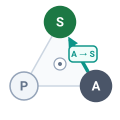
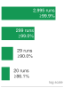
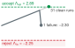
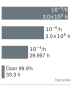
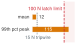

![Two-panel aisle example, stacked. Top: recorded-state replay scores a constant one-degree heading offset with angular mean squared error 3.05 times 10 to the minus four radians squared and resets the next input to the recorded centerline. Bottom: if that heading persists in a physical rollout at 1.5 meters per second, lateral drift grows linearly and reaches the 15-centimeter side clearance after about 5.7 seconds, 8.6 meters along the aisle. Policy proposals pass through the permission path before the plant moves.](07_evaluation_files/figure-html/cell-5-output-1.png)
Closed-Loop Evaluation
7 Closed-Loop Evaluation
Purpose
Physical AI stack focus for this chapter.
Why can a robot pass every trial and still lack the evidence needed for deployment?
A robot that repeatedly opens one door has supplied evidence about that door, its own hardware, and the conditions of those trials. It has not established how it will behave at a displaced latch, with a different payload, or after its sensors drift, and a flawless record from a short campaign remains consistent with a policy that fails a substantial fraction of its attempts. Its admitted actions also change the observations it receives, so agreement with recorded demonstrations cannot substitute for testing the resulting motion. Physical trials expose that feedback, but each consumes time and mechanical life, every further factor of ten in demonstrated reliability costs roughly ten times the trials, and protective interventions stop some trajectories before their consequences unfold. A team that reads a clean record as readiness releases the machine into conditions no trial visited and credits the learned policy with protection its supervisors supplied. Evaluation exists to prevent that error. It ties each task outcome to the conditions sampled, keeps every intervention in the record, states the uncertainty that remains, and names the uncovered conditions the rest of the machine must guard. Because actions cross an irreversible causal boundary, evidence of policy competence must remain distinct from permission to move.
Learning Objectives
- Interpret physical success rates as conditional evidence about a specified machine, environment, and trial protocol
- Interpret completion and intervention metrics without crediting the policy for protection supplied by its supervision
- Compare open-loop prediction accuracy with closed-loop behavior shaped by the policy’s own actions
- Select the evidence regime (replay, simulation, shadow operation, or constrained physical testing) that can answer a given evaluation question
- Design a predeclared trial protocol with fixed outcome rules and full-denominator accounting of interventions and aborts
- Calculate confidence bounds, trial counts, and test time for a zero-failure campaign under stated sampling assumptions
- Construct an evaluation record that bounds its operational claim and identifies coverage gaps and required protections
- Evaluate which rare failures remain unsupported by feasible testing and the available statistical assumptions
- Apply sequential stopping rules and two-policy comparisons without inflating the error rate a campaign declares
Explore the concepts in this chapter
The volume’s concept map, opened on this chapter. Select a concept to read how it connects to ideas in other chapters. Open the full map ↗
7.1 From Clean Runs to Bounded Claims
The checkpoint latch-bc-01 arrives from offline imitation learning with a policy manifest that declares exactly one supported condition, the nominal strike plate at the guarded approach. The manifest marks where the policy’s training evidence ends, and evaluation asks what physical trials can establish inside that line. The recovery candidate latch-bc-recovery-02, whose wider claim new experience still has to earn, receives its own campaign later in the chapter (section 7.8.1). latch-bc-01 is flashed onto the warehouse mobile manipulator for a nominal validation campaign. In each trial, the mobile base begins 2 m (illustrative; see the Reader Guide) from the spring-latched cage door, drives forward, and comes to a complete halt. With the base at rest, the manipulator executes a guarded approach at 0.03 m/s, unlatches the mechanism, and opens the door without crossing the 15 N contact tripwire or drawing a human intervention. Suppose the robot completes twenty consecutive runs this way, an empirical success rate of \(\ObservedSuccessFraction = 1.00\) (100 percent). On a static vision or language benchmark, an unblemished score might suggest that the model is ready for production. On physical hardware, twenty clean runs leave the deployment decision open. They establish only a wide lower confidence bound, one that a policy failing a substantial fraction of its attempts can still satisfy, and they reveal nothing about failure modes too rare to appear in twenty draws.
↩︎ The policy manifest, which records how a checkpoint was produced and the operating domain it declares, is established in The Policy Manifest.
The gap between that perfect score and a deployable claim comes from three ways in which physical evaluation departs from the static protocol of machine learning. In that protocol, engineers draw a held-out dataset once from a stationary distribution, score each example independently, and treat the aggregate as a faithful descriptor of model quality. First, a physical policy selects its own test distribution. Every admitted action alters the environment and determines the observations that follow, so no pre-recorded dataset can stand in for the states the policy will visit. This is the second law, endogenous data (principle 2), acting on evaluation. The same feedback that pushes a cloned policy off its demonstrations also decides which states a test campaign samples. Second, every trial consumes test-cell time, battery charge, and mechanical life, which keeps sample counts small and each sample expensive. Third, a physical trial delivers kinetic energy across the causal boundary, and that energy cannot be recalled. When an interlock, a contact tripwire, or a safety operator aborts an errant motion before damage occurs, the trial ends early and leaves a censored observation that is neither an unequivocal success nor an unmitigated crash. Aerospace, automotive, and industrial automation engineers combine physical tests with model-based arguments about controller stability and protection. The learned proposer in this campaign arrives without such a certificate, so its task reliability must be bounded by finite empirical sampling under the declared conditions.
Closed-loop evaluation therefore asks what a finite campaign of physical trials can establish about a learned proposer, and what it must leave for the rest of the machine to handle. Four obligations answer that question, and they order this chapter. A success rate is meaningful only when bound to a declared population of hardware states, environmental conditions, and trial procedures, with every protective intervention kept out of the policy’s credit (section 7.2). The evidence must come from a regime that can expose the failure in question, which for most physical failures means routing proposals through the real permission path rather than scoring them against logs (section 7.3 and section 7.4). A finite record becomes a defensible bound only under a protocol fixed before the first run, and each additional “nine” of demonstrated reliability costs roughly ten times the trials (section 7.5 through section 7.7). Finally, the evaluation record, the link in the record chain after the policy manifest, must state which conditions were tested and which were not. It must also turn every untested condition, together with every hazard too rare for any campaign to sample, into an obligation for the runtime permission path (section 7.8 and section 7.9).
The first obligation begins with the twenty runs themselves. Before that perfect fraction can mean anything, the campaign must fix its outcome rules, define the operational population it sampled, and separate what the policy achieved from what supervision supplied. A defensible evaluation record never credits the learned proposer with successes that hardware interlocks or supervisory overrides actually purchased.
7.2 What a Physical Success Rate Measures
A latch-manipulation policy that reliably opens a door during morning bench tests can jam repeatedly when confronted with a strike plate displaced by only three millimeters. Its measured success rate does not belong to the neural network weights in isolation; it characterizes the coupled dynamical system formed by the policy, the mechanical plant, the onboard compute platform, the physical environment, and the trial protocol itself. While a reproducible offline benchmark score indicates how well a model fits a frozen dataset, a physical success rate measures how the embodied closed-loop system behaves across a distribution of physical executions.
Evaluating a policy requires executing a sequence of discrete physical runs. A single trial is fully determined only when every physical parameter capable of altering the state trajectory is either explicitly controlled or systematically sampled. Formally, a single trial condition is the tuple \(\TrialCondition = (\MechanicalPlantState_0, \EnvironmentParameters, \PlantParameters, \pi_\ModelParameters, \TerminationProtocol)\), drawn from an operational testing distribution \(\OperationalTestDistribution\):
- The initial state vector \(\MechanicalPlantState_0\) specifies the machine’s starting condition, including its spatial pose (position and orientation), linear and angular velocities, and joint encoder positions.
- The environment vector \(\EnvironmentParameters\) captures external physical variables, such as the tire-floor friction coefficient (\(\CoulombFrictionCoefficient\)), ambient illuminance, obstacle geometry, and ambient air temperature.
- The machine state \(\PlantParameters\) captures physical and hardware properties sampled from the fleet manufacturing and wear distribution \(\FleetManufacturingDistribution\). This encompasses unit-to-unit mechanical tolerances, battery state of charge, payload mass, tire wear, lost motion and compliance in the arm’s transmissions, and sensor calibration matrices.
- The computational configuration \(\pi_\ModelParameters\) represents the frozen policy weights \(\ModelParameters\), numerical quantization formats (such as FP16 or INT8), real-time thread scheduling deadlines, and software driver versions.
- The termination protocol \(\TerminationProtocol = (\CompletionDeadline, \GoalSet, \EvaluationPredicate)\) defines the execution deadline \(\CompletionDeadline\), the spatial goal region \(\GoalSet\), and the binary evaluation predicate \(\EvaluationPredicate\) that maps the realized trajectory to a terminal outcome \(\TrialCompletionIndicator \in \{0, 1\}\).
In static machine learning benchmarks, inputs \((\ModelInput_i, \ExampleLabel_i)\) are sampled independently from a static data distribution \(\StaticDataDistribution(\ModelInput, \ExampleLabel)\). In Physical AI, the continuous trajectory \(\text{Traj}(\TrialCondition) = (\MechanicalPlantState_0, \AdmittedControlCommand_0, \MechanicalPlantState_1, \AdmittedControlCommand_1, \dots, \MechanicalPlantState_\RolloutHorizon)\) is generated sequentially by the closed-loop physical state transition kernel: \[\MechanicalPlantState_{t+1} \sim \PlantTransitionKernel(\MechanicalPlantState_t, \AdmittedControlCommand_t; \PlantParameters, \EnvironmentParameters), \quad \CognitivePolicyAction_{t} = \pi_\ModelParameters(\MechanicalPlantState_t), \quad \AdmittedControlCommand_t = \text{Gate}(\CognitivePolicyAction_{t}, \MechanicalPlantState_t)\] Here \(\text{Gate}\) stands for the permission path, which admits, clips, or replaces each proposal \(\CognitivePolicyAction_{t}\) before it becomes the applied command \(\AdmittedControlCommand_t\). Its permission and controller parameters remain fixed and are archived with the evaluated configuration; changing them changes the evaluated closed loop. The true success probability under this evaluation protocol is the expected value of the binary task outcome averaged over the joint distribution of trial conditions: \[\TrialSuccessProbability(\OperationalTestDistribution) = \mathbb{E}_{\TrialCondition \sim \OperationalTestDistribution}[\EvaluationPredicate(\text{Traj}(\TrialCondition))] \tag{1}\] where \(\text{Traj}(\TrialCondition)\) is the physical trajectory generated under condition \(\TrialCondition\). Altering floor friction, ambient temperature, or battery voltage modifies the physical transition kernel \(\PlantTransitionKernel\) even when the neural network weights \(\ModelParameters\) remain untouched. The operational testing distribution \(\OperationalTestDistribution\) is therefore an inseparable component of the quantity being estimated.
↪ The formal integral over the closed-loop trajectory distribution, including the plant transition kernel and the permission map, is developed in Closed-loop trajectory distributions and evaluation estimands.
1 Design of Experiments: Fisher’s agricultural field trials introduced randomization and blocking so that variation in the soil could not masquerade as a treatment effect (Fisher 1935). A stratified test matrix blocks on payload, approach speed, and lighting for the same reason, and randomizing the run order keeps winding heat and spring relaxation from entering the comparison as if they were properties of the policy (section 7.7.4).
In test engineering, the abstract distribution \(\OperationalTestDistribution\) is realized through a stratified test matrix1 across controllable parameters, systematically varying payload mass, approach speed, illumination, and initial spatial standoff, while logging uncontrollable environmental parameters such as ambient temperature and floor friction. Unstratified random sampling across the parameter space oversamples benign nominal states and leaves critical boundary regions unvisited. Each stratum of the matrix (one payload, one approach speed, one plate position) is then its own population for the statistical bounds that follow, with its own \(\OperationalTestDistribution\) and its own success probability. A claim about the whole matrix needs explicit weights across strata, which the evaluation record of section 7.8 declares before the first run.
Definition 7.1: Closed-loop evaluation estimand
Closed-loop evaluation estimand is the expected physical task outcome \(\TrialSuccessProbability(\OperationalTestDistribution) = \mathbb{E}_{\TrialCondition \sim \OperationalTestDistribution}[\EvaluationPredicate(\text{Traj}(\TrialCondition))]\) defined over the joint distribution of initial states, mechanical plant wear, environmental physics, frozen policy weights, and evaluation predicates: \[\TrialCondition = (\MechanicalPlantState_0, \EnvironmentParameters, \PlantParameters, \pi_\ModelParameters, \TerminationProtocol) \sim \OperationalTestDistribution\] rather than an intrinsic property of the neural policy weights evaluated in isolation.
- Significance: In static machine learning, held-out accuracy is treated as a property of the model \(\pi_\ModelParameters\). In physical AI, substituting a worn tire, letting battery voltage sag, or shifting ambient illuminance alters the physical state transition function without changing a single weight. The sampling distribution of operational conditions \(\OperationalTestDistribution\) is an inseparable part of the quantity being estimated.
- Distinction: Unlike open-loop validation metrics (such as validation loss, cosine similarity, or mean squared trajectory error) that score predictions against frozen recorded states, the closed-loop estimand integrates over the endogenous feedback loop. In that loop, past actions physically move the machine and directly change the future sensor observations it receives.
- Common pitfall: Reporting a single success rate percentage without predeclaring the support, density, and environmental bounds of the test distribution \(\OperationalTestDistribution\). Any physical policy can be made arbitrarily successful by testing exclusively in benign, unperturbed states.
7.2.1 Hardware instance variance and environmental unobservables
Freezing the neural network weights \(\pi_\ModelParameters\) and the termination protocol \(\TerminationProtocol\) fixes only two of the five entries in the trial condition \(\TrialCondition\); the plant parameters \(\PlantParameters\) and environmental parameters \(\EnvironmentParameters\) still vary from machine to machine and from morning to afternoon. On a mobile manipulator, this dispersion comes from two sources: hardware instance variance across individual builds and environmental unobservables in the operating workspace.
First, robotic production lines do not manufacture identical copies. Nominally identical units diverge in lost motion, thermal behavior, and controller response (Rig-to-rig divergence across nominally identical fleets). The tolerances that matter for evaluation also include drivetrain compliance and hysteresis that grow with wear (Harmonic Drive LLC 2006), link deflection that shifts the tool center point, and camera-mount offsets between the sensor frame \(\CameraReferenceFrame\) and the base frame \(\BodyReferenceFrame\). They further include torque constants \(\MotorTorqueConstant\) that vary across windings and drive voltage that loses headroom against back-electromotive force (back-EMF) as the battery discharges. Each of these changes the trial condition without changing a weight, so qualification campaigns characterize every unit’s lost motion, joint stiffness, and camera extrinsics on an inspection bench rather than assuming nominal catalog values.
Harmonic Drive LLC. 2006. CSF Mini Series Harmonic Drive Gearheads and Component Sets: Catalog. Harmonic Drive LLC.
Second, environmental unobservables alter physical interaction dynamics without changing camera pixels in ways that a neural network can easily recognize. Ambient daylight shifting across a warehouse alters illuminance, causing camera auto-exposure routines to lengthen shutter times and inducing motion blur during base turns. Direct solar glare at dawn or dusk saturates complementary metal-oxide-semiconductor (CMOS) sensor arrays, washing out optical contrast around the latch interface. On the floor, dust accumulation and ambient humidity alter the tire-floor friction coefficient (\(\CoulombFrictionCoefficient\)), lengthening braking distances and corrupting wheel odometry. Within the manipulator arm, repeated door openings generate Joule heating (\(\WindingCurrent^2 \ElectricalResistance\)) in motor windings and warm harmonic drive lubricants, decreasing viscous damping and causing thermal expansion across structural links. Consequently, the tool center point meets the latch with a millimeter-scale spatial offset on a hot afternoon compared to a cold morning.
Trial reset procedures introduce another major source of unintended drift in \(\TrialCondition\). When human operators reposition the mobile base after a difficult or aborted run, subconscious bias often leads them to favor forgiving, nominal configurations, systematically excising difficult boundary states from the sample. Conversely, an automated reset routine that drives the identical recovery path repeatedly heats actuator windings cyclically, introducing progressive thermal degradation across runs. Worst of all, an operator who catches a stumbling robot mid-fall and discards the run as an invalid trial erases the most informative corner-case failures from the evaluation record.
Statistical evaluation must therefore maintain a strict distinction between sampling variation and shifts in the underlying estimand. When \(\TrialCount\) independent trials are drawn from a stationary distribution \(\OperationalTestDistribution\), the sample proportion \(\ObservedSuccessFraction = \frac{1}{\TrialCount} \sum_{i=1}^\TrialCount \TrialCompletionIndicator_i\) fluctuates around the true expectation \(\TrialSuccessProbability(\OperationalTestDistribution)\) due to ordinary binomial noise, which standard statistical estimators bound. However, loading a payload onto the tote rack or moving the door’s strike plate transitions the experiment to an entirely different distribution \(\ShiftedTestDistribution\) with its own success probability \(\TrialSuccessProbability(\ShiftedTestDistribution)\). Pooling runs across these two conditions without declaring their sampling weights conflates distinct physical configurations into an uninterpretable average. Independent draws from a predeclared mixture support a claim about that mixture; a quota-based stratified matrix instead requires separate inference within each cell and explicit weighting for an aggregate claim. Fixing the condition tuple \(\TrialCondition\) settles which population a campaign samples, but a single binary outcome \(\TrialCompletionIndicator \in \{0, 1\}\) still hides whether the learned proposer succeeded on its own or was rescued by the permission path.
7.2.2 Intervention-based physical metrics
Even when the trial condition \(\TrialCondition\) is fixed, a single binary pass rate cannot distinguish a policy that operated the door latch on its own from one that was rescued on every attempt by permission-path clips or remote teleoperators. Consider four divergent operational outcomes during a door-opening task:
- A policy proposes an excessive contact force, but the permission path clips the command, allowing the door to open smoothly while remaining within mechanical limits.
- The permission path detects an impending joint limit and halts the manipulator entirely, preserving hardware safety while leaving the task incomplete.
- A human safety operator intervenes via remote teleoperation to clear a jammed latch pin, after which the robot resumes autonomous execution and completes the run.
- The raw policy executes the entire trajectory unassisted, completing the manipulation task within nominal limits without intervention.
Every protective actor in these four scenarios other than the human operator is the permission path, acting by clipping a proposal, replacing it, or stopping the machine. The first scenario shows a well-functioning integrated machine where permission-path clips compensate for raw proposer imperfections, whereas the second protects the hardware at the expense of task completion. The third achieves the objective only by drawing on costly human labor, leaving only the fourth as genuine proposer autonomy.
Evaluating physical AI systems therefore requires decomposing performance into three independent channels: whole-machine task completion within operational limits, raw proposer autonomy, and supervisory intervention frequency. The task-completion rate, the fraction of trials whose outcome \(\TrialCompletionIndicator_i\) (defined in the first item below) equals 1, measures the first channel. The autonomous completion rate measures the second, and mean time between interventions and intervention density measure the third. Reset latency belongs to no channel; it prices what each outcome costs the test cell. Runtime safety adjustments are an intended feature of the architecture, so a small corrective clip by the permission path should not brand a completed run as a system failure. Nevertheless, tracking proposer autonomy separately reveals how often the learned model attempts to violate physical boundaries. Telemetry pipelines must log adjustments, command rejections, protective stops, and human overrides using predeclared event-counting rules, ensuring that a sustained safety clamp over several seconds is recorded as a single event rather than hundreds of spurious high-frequency faults.
Autonomous completion rate (ACR): Let \({\TrialInterventionCount}_i \in \{0, 1, 2, \dots\}\) be the total count of supervisory interventions during trial \(\EvaluationTrialIndex\), whether initiated by human safety operators, the permission path’s clips and stops, or emergency tripwires, and let \(\TrialCompletionIndicator_i \in \{0, 1\}\) denote goal achievement within the execution deadline \(\CompletionDeadline\). The unassisted autonomous success indicator is: \[\UnassistedSuccessIndicator_i = \IndicatorFunction(\TrialCompletionIndicator_i = 1 \land {\TrialInterventionCount}_i = 0)\] ACR is the sample proportion of trials completed entirely without supervisory intervention: \[\text{ACR} = \frac{1}{\TrialCount} \sum_{i=1}^\TrialCount \UnassistedSuccessIndicator_i = \frac{\UnassistedCompletionCount}{\TrialCount}\] ACR measures strict raw proposer autonomy: a single recorded intervention forces \(\UnassistedSuccessIndicator_i = 0\). In contrast, the whole-machine outcome \(\TrialCompletionIndicator_i\) can remain \(1\) when the permission path clips the proposer’s commands and the task still completes within service bounds.
Mean time between interventions (MTBI): For any declared intervention class, MTBI quantifies the mean active operating duration between supervisory events: \[\SupervisoryMtbi = \frac{\CampaignActiveTime}{\TotalInterventionCount} = \frac{\sum_{i=1}^\TrialCount {\TrialRunTime}_i}{\sum_{i=1}^\TrialCount {\TrialInterventionCount}_i}\] where \({\TrialRunTime}_i\) is the active operating duration of trial \(\EvaluationTrialIndex\) and \(\TotalInterventionCount = \sum_{i=1}^\TrialCount {\TrialInterventionCount}_i\) is the total count of recorded interventions within that class. MTBI reflects the operational burden imposed by supervisory systems. Frequent automated filter adjustments signal aggressive policy proposals or model distribution shift, whereas frequent manual recoveries directly drive up staffing costs. Neither a favorable MTBI nor an absence of physical damage proves that a policy is ready for unattended deployment.
Intervention density (\(\InterventionDensity\)): In spatial navigation and continuous trajectory tracking, interventions must be normalized against physical travel distance or discrete execution steps: \[\InterventionDensity = \frac{\TotalInterventionCount}{\sum_{i=1}^\TrialCount \TrialPathDistance_i} \quad [\text{interventions per kilometer}] \quad \text{or} \quad \InterventionDensity = 1{,}000 \times \frac{\TotalInterventionCount}{\sum_{i=1}^\TrialCount \TrialControlStepCount} \quad [\text{interventions per } 1{,}000 \text{ steps}]\] where \(\TrialPathDistance_i\) is the physical path distance traversed during trial \(\EvaluationTrialIndex\), and \(\TrialControlStepCount\) is the number of control cycles executed. Normalizing by exposure makes intervention rates comparable across routes or operating conditions. Locating concentrated degradation also requires retaining each event’s location and condition and comparing these rates across strata, such as narrow doorways or tight mechanical latches.
Reset latency (\(\TrialResetLatency\)): In physical qualification campaigns, the primary bottleneck in testing throughput is governed by the time required to restore the robot and workspace after a trial completes or aborts: \[\TrialResetLatency = \PhysicalRestoreTime + \ResetCalibrationTime + \TelemetryFlushTime\] The standard door-opening run requires 25 s of active execution. While its nominal reset cycle is brief (section 7.7.2), a run that jams the latch pin requires an operator intervention of approximately 60 s (illustrative) to clear the jammed pin, recalibrate joint encoders, and return the mobile base to its initial standoff pose. For jammed runs, this manual reset consumes 70.6 percent of total test-cell occupancy. High reset latencies create organizational pressure to cut corners, for instance by skipping motor thermal cooldowns or manually nudging the robot into easier initial poses, and each shortcut breaks the statistical stationarity of the campaign.
Engineers must not conflate MTBI with mean time between failures (MTBF). While an MTBF metric tracks functional breakdowns or mechanical failures, MTBI, ACR, and \(\InterventionDensity\) capture supervisory burden and proposer autonomy within an operating envelope. A robot fleet can maintain an unblemished record of zero hardware damage simply because vigilant human safety drivers or a conservative permission path intervene whenever an unsafe state nears. Recording a run that was truncated or guided by external supervision as an unassisted operational success masks policy shortcomings behind the protective capability of the safety system. Section 7.4 shows why such runs are censored observations and names this error the censored trial fallacy.
Evaluation protocols keep these metrics separate so that engineers can observe the trade-offs between safety filtering, autonomous capability, and operational throughput. These outcome channels fix which quantities must be recorded across experimental trials. The next challenge is to design a closed-loop evaluation harness that exposes these behaviors systematically under dynamic feedback.
7.3 Closed-Loop Dynamics
A policy checkpoint that achieves the lowest validation loss on held-out teleoperation logs can drive the mobile base into a warehouse rack or jam the door latch on its first physical trial. Offline scoring resets the robot’s state to the demonstrator’s recording at every step, erasing the cumulative consequences of the policy’s own actions. In standard deep learning workflows, model evaluation centers on empirical risk minimization over a static, held-out validation dataset \(\ValidationDataset = \{(\ModelInput_i, \ExampleLabel_i)\}_{i=1}^\EvaluationSampleCount\): \[\ValidationLoss(\ModelParameters) = \frac{1}{\EvaluationSampleCount} \sum_{i=1}^\EvaluationSampleCount \LossFunction(\ParameterizedPredictor(\ModelInput_i), \ExampleLabel_i)\] Whether the target metric is Top-1 classification accuracy, next-token perplexity, an F1 score, or coordinate regression loss, the evaluation pipeline remains passive and decoupled. The underlying data-generating process is feedforward and memoryless with respect to the model’s outputs: mispredicting sample \(\ExampleIndex\) exerts zero causal influence on sample \(\ExampleIndex+1\) (\(\partial \ModelInput_{i+1} / \partial \ModelPrediction_i = 0\)).
Transporting this static paradigm to physical control creates the offline evaluation illusion, the unfounded assumption that lower validation loss, higher action cosine similarity, or smaller Mean Squared Error (MSE) on logged data guarantees superior physical execution. Offline loss metrics of the form \(\ValidationLoss(\ModelParameters) = \frac{1}{\EvaluationSampleCount} \sum_{i=1}^\EvaluationSampleCount \|\DemonstratorAction_i - \pi_\ModelParameters(\MechanicalPlantState_i^*)\|^2\) evaluate candidate predictions exclusively along frozen demonstrator trajectories. Controlled benchmarks across simulated and physical manipulation tasks demonstrate this failure directly: the training checkpoint with the lowest validation loss performed substantially worse during closed-loop rollouts than alternative checkpoints, with task success frequently rising even as validation loss climbed (Mandlekar et al. 2021).
Mandlekar, Ajay, Danfei Xu, Josiah Wong, Soroush Nasiriany, Chen Wang, Rohun Kulkarni, Li Fei-Fei, Silvio Savarese, Yuke Zhu, and Roberto Martín-Martín. 2021. “What Matters in Learning from Offline Human Demonstrations for Robot Manipulation.” Proceedings of the 5th Conference on Robot Learning (CoRL), Proceedings of machine learning research, vol. 164: 1678–90.
The decoupling that justifies offline scoring vanishes in physical AI. Admitted policy actions cross the causal boundary into mass, momentum, and non-smooth contact mechanics. Instead of assigning categorical labels, the policy outputs forces, torques, and velocity setpoints that physically perturb the plant, endogenously generating future sensory observations through the system dynamics (\(\MechanicalPlantState_{t+1} = \DiscretePlantDynamics(\MechanicalPlantState_t, \AdmittedControlCommand_t)\)). These commands interact continuously with inertia, friction, and mechanical backlash. Consequently, a navigation policy can track recorded demonstrator trajectories with negligible regression error during offline playback, yet exhaust the vehicle’s entire lateral clearance against a warehouse rack before traversing a third of the aisle. The failure stems directly from what each evaluation regime feeds back to the policy.
In an open-loop evaluation, a candidate policy \(\pi_\ModelParameters\) is scored across a static dataset of recorded demonstrations \(\DemonstrationDataset = \{(\MechanicalPlantState_t^*, \DemonstratorAction_t)\}_{t=1}^{\BehaviorCloningHorizon}\). At each discrete timestep \(\ControlStepIndex\), the policy receives an expert state \(\MechanicalPlantState_t^*\) and predicts an action \(\PredictedPolicyAction_t = \pi_\ModelParameters(\MechanicalPlantState_t^*)\), which a standard loss function such as mean squared error or cross-entropy compares against the recorded expert action \(\DemonstratorAction_t\). Because the harness then feeds the next recorded state \(\MechanicalPlantState_{t+1}^*\) directly from storage and discards \(\PredictedPolicyAction_t\) without ever executing it on hardware, the incoming state sequence remains strictly independent of prior predictions (\(\partial \MechanicalPlantState_{t+1}^* / \partial \PredictedPolicyAction_t = \ZeroVector\)). In a closed-loop evaluation, by contrast, the policy proposes an action \(\CognitivePolicyAction_{t} = \pi_\ModelParameters(\MechanicalPlantState_t)\) from live sensory feedback. The deterministic permission path then validates that proposal against current plant state and safety invariants before dispatching an approved command \(\AdmittedControlCommand_t\) (or an intervention fallback) to the actuators. The plant then advances according to physical dynamics (\(\MechanicalPlantState_{t+1} = \DiscretePlantDynamics(\MechanicalPlantState_t, \AdmittedControlCommand_t)\)), so every admitted command alters the physical state and shapes all subsequent sensory inputs across the causal boundary.

Admitted actions choose the next observation.7.3.1 Compounding error and kinematic integration
That feedback path turns small one-step tracking residuals into growing state deviations, following the worst-case structure derived in Recovery and Compounding Error. If a policy deviates from expert actions with probability at most \(\SingleStepImitationError\) per step on recorded expert states, open-loop evaluation across a horizon of \(\BehaviorCloningHorizon\) steps accumulates an expected cost bounded by \(\BehaviorCloningHorizon\SingleStepImitationError\). In closed loop, however, an early deviation can steer the robot into unvisited regions of the state space for the remainder of the trajectory, driving the cumulative imitation cost to scale as \(\BehaviorCloningHorizon^2\SingleStepImitationError\) (equation 5.1). An open-loop benchmark can therefore understate closed-loop task divergence by a factor proportional to the operating horizon. This bound governs zero-one decision divergence rather than unbounded quantities such as contact force or structural yield. Classical kinematics supplies the physical mechanism. Uncorrected heading and steering biases integrate forward into lateral displacements that exhaust the robot’s clearance envelope.
A policy whose own actions displace it from its training distribution is the second law at work on a test bench, and evaluation must quantify what that displacement costs on physical hardware. Because the mobile manipulator’s base remains stationary during door manipulation trials, the platform’s warehouse navigation stack supplies the clearest illustration of kinematic accumulation. Consider the base traversing a 30 m aisle at its 1.5 m/s drive limit, where the nominal expert trajectory tracks the centerline with heading \(\HeadingAngle^* = 0\text{ rad}\) and lateral offset \(\BaseLateralPosition^* = 0\text{ m}\). Suppose the candidate navigation policy possesses a systematic heading bias of \(\FiniteChange\HeadingAngle = 1.0^\circ\) (0.01745 rad) at every control step. The deterministic permission path admits each individual velocity command because, in isolation, a one-degree heading adjustment remains dynamically feasible while lateral clearance persists.
↩︎ How a policy’s own actions shift the states it visits away from the demonstrator’s occupancy is established in Mechanics of Endogenous Covariate Shift.
2 Mean Masking of Steering Spikes: Averaging squared steering error over thousands of straight-aisle frames also hides a brief, large prediction spike, which barely moves the mean. Whether such a spike matters depends on whether its integrated motion spends the clearance before the permission path responds, a question only a plant and timing model can answer.
3 Unicycle Model: The simplest planar vehicle model, in which pose \((\BaseLongitudinalPosition, \BaseLateralPosition, \HeadingAngle)\) evolves as \(\BaseLongitudinalVelocity = \BaseForwardSpeed\cos\HeadingAngle\), \(\BaseLateralVelocity = \BaseForwardSpeed\sin\HeadingAngle\), \(\BaseHeadingRate = \YawRate\). This formulation captures the essential nonholonomic constraint of the aisle: because a wheeled base cannot translate instantaneously sideways, any heading discrepancy directly translates forward velocity toward the rack.
In an open-loop evaluation, the policy receives the demonstrator state \(\MechanicalPlantState_t^* = ({\BaseLongitudinalPosition}_t^*, 0, 0)\) at each step and predicts forward velocity with a \(1.0^\circ\) steering offset. The offline scoring pipeline records a mean absolute angular error of \(1.0^\circ\) (0.01745 rad) and a mean squared error of \(\text{MSE}_{\HeadingAngle} = (0.01745)^2 \approx 3.05 \times 10^{-4}\text{ rad}^2\).2 The number is small because it is measured in radians squared. More important, the replay score stays at that same per-step value however long the aisle is, because each next input returns to the centerline and the error never accumulates. During closed-loop execution, however, the robot’s physical movement reflects previously admitted commands, allowing uncorrected heading errors to integrate continuously. Under planar unicycle kinematics3 (\(\BaseLateralVelocity = \BaseForwardSpeed \sin \HeadingAngle \approx \BaseForwardSpeed \FiniteChange\HeadingAngle\)), a persistent angular offset integrates directly into a lateral displacement that grows linearly with the time \(\DriftElapsedTime\) since the base left the centerline: \[\BaseLateralPosition(\DriftElapsedTime) = \int_0^{\DriftElapsedTime} \BaseForwardSpeed \sin \FiniteChange\HeadingAngle \, d\IntegrationDummyTime \approx \BaseForwardSpeed \FiniteChange\HeadingAngle \DriftElapsedTime\] If the policy carries a persistent yaw-rate bias \(\BaseYawRateBias\) (steering drift) rather than a fixed angular offset, the heading angle itself grows linearly over time (\(\HeadingAngle(\DriftElapsedTime) = \int_0^{\DriftElapsedTime} \BaseYawRateBias \, d\IntegrationDummyTime = \BaseYawRateBias \DriftElapsedTime\)). Integrating forward velocity \(\BaseForwardSpeed\) then yields a cumulative lateral deviation that compounds quadratically in time: \[\BaseLateralPosition(\DriftElapsedTime) = \int_0^{\DriftElapsedTime} \BaseForwardSpeed \sin(\BaseYawRateBias \IntegrationDummyTime) \, d\IntegrationDummyTime \approx \frac{1}{2} \BaseForwardSpeed \BaseYawRateBias \DriftElapsedTime^2\] This quadratic growth resembles the \(\BehaviorCloningHorizon^2\SingleStepImitationError\) imitation bound, but the two characterize distinct phenomena. The kinematic derivation integrates a systematic yaw-rate bias through continuous dynamics, whereas the imitation bound accounts for accumulated discrete decision costs under distribution shift. Both show small, bounded errors accumulating polynomially over an operational horizon. Neither excludes the worse case that Recovery and Compounding Error described, in which a smooth imitator of a stable expert can compound its errors exponentially with horizon; the aisle example simply does not need that mechanism to fail.
For the constant \(1.0^\circ\) heading bias, the mobile base spans 100 cm within a 130 cm aisle. This geometry leaves \(\LateralClearance =\) 15 cm of lateral clearance to the storage racks on either side. At full drive velocity, the kinematic drift consumes this safety buffer at: \[\ClearanceExhaustionTime = \frac{\LateralClearance}{\BaseForwardSpeed \sin \FiniteChange\HeadingAngle}, \tag{2}\] which evaluates to 5.7 s, after just 8.6 m of forward travel, less than a third of the way through the aisle. The same heading offset that replay scores at an angular mean squared error of \(3.05 \times 10^{-4}\text{ rad}^2\), because each next input returns to the recorded centerline, spends the entire 0.15 m side clearance in the physical loop (figure 1). The computed point is the unmitigated collision horizon. To halt before impact, the runtime permission path must intervene earlier, allowing for qualified detection, command and actuation response, and stopping motion. A protective stop makes strict proposer autonomy fail while preserving protection; an unprotected rack strike fails protection as well. Both expose a limitation of the policy that offline evaluation rated as near-flawless.
This warehouse scenario highlights the two structural mechanisms that cause open-loop validation metrics to decouple from physical performance:
- State integration across time: Static evaluation cannot integrate persistent control errors into physical displacements. By resetting the robot’s input state to an expert demonstration at every clock cycle, offline scoring obscures error accumulation. In closed-loop deployment, however, the state at timestep \(\ControlStepIndex\) represents the unrolled composition of all prior control actions: \[\MechanicalPlantState_t = \DiscretePlantDynamics(\DiscretePlantDynamics(\dots \DiscretePlantDynamics(\MechanicalPlantState_0, \AdmittedControlCommand_0)\dots, \AdmittedControlCommand_{t-2}), \AdmittedControlCommand_{t-1})\] A persistent heading bias does not require an algorithmic flaw. Physical phenomena like asymmetric tire wear, mast vibration, uneven payload distribution, or floor camber routinely introduce systematic offsets that accumulate across steps.
- Covariate shift into unmodeled states: Static benchmarks cannot evaluate how a policy behaves once early errors steer the plant away from nominal trajectories. The very first uncorrected action shifts the base from the expert state \(\MechanicalPlantState_1^*\) to an unvisited state \(\MechanicalPlantState_1\). Once the base drifts even a few centimeters off the centerline, it enters operating states absent from \(\DemonstrationDataset\). Because offline metrics are evaluated exclusively along demonstrator states where \(\BaseLateralPosition = 0\text{ m}\), they provide no evidence about policy behavior when \(\BaseLateralPosition \neq 0\text{ m}\). Lacking training on corrective maneuvers, the policy often generates larger prediction errors in these off-nominal regimes, precipitating rapid divergence.
↩︎ Compounding covariate shift, and the recovery experience a fixed demonstration archive lacks, are established in Compounding errors and recovery experience.
7.3.2 Contact discontinuities and metric masking
In the warehouse aisle, a two-millimeter tracking residual spends a tiny fraction of lateral clearance; at the door latch, that same two-millimeter residual commands the gripper into rigid steel. The moment an end-effector touches a latch, unconstrained free-space kinematics give way to constrained contact mechanics governed by impact, stick, and slip. In classical rigid-body mechanics, collision produces discontinuous velocity jumps (\(\PostImpactNormalVelocity \ne \PreImpactNormalVelocity\)), while Coulomb friction creates set-valued reaction forces (\(\CoulombFrictionForce \in [-\CoulombFrictionCoefficient \NormalContactForce, \CoulombFrictionCoefficient \NormalContactForce]\)). Because these transitions violate Lipschitz continuity (a bound on how much the dynamics can change per unit change in state), infinitesimally small variations in spatial state produce disproportionately large, discontinuous changes in physical dynamics. Although mechanical compliance and structural damping distribute impact forces across small time windows in real hardware, aggregate offline loss metrics obscure the critical physical consequences of crossing contact boundaries:
Action cosine similarity ignores operational magnitude: In representation learning and behavior modeling, action cosine similarity: \[\text{Cosine}(\PredictedPolicyAction, \DemonstratorAction) = \frac{\PredictedPolicyAction^\top \DemonstratorAction}{\|\PredictedPolicyAction\| \|\DemonstratorAction\|}\] evaluates directional alignment between predicted and expert commands. At a physical contact interface, however, directional alignment alone is insufficient because cosine metrics discard vector magnitude entirely. A policy proposal achieving 0.999 cosine similarity that commands 25 percent insufficient force fails to overcome the latch’s mechanical preload and static friction, stalling against the mechanism and halting the task. Conversely, a command with identical 0.999 similarity that commands 150 percent of the required force overloads the contact interface, risking an immediate trigger of the 15 N protective tripwire. Whether hardware damage occurs depends on structural compliance, pre-contact kinetic energy, and joint impedance response. A trip invokes the protective response, whose ability to prevent damage requires qualification under those conditions. A stopped, incomplete run fails the task despite the favorable cosine score.
Action mean squared error equates disparate physical regimes: In offline supervised regression, Mean Squared Error: \[\text{MSE} = \frac{1}{\ActionDimension} \sum_{j=1}^{\ActionDimension} (\PredictedActionComponent_j - \DemonstratorActionComponent_j^*)^2\] penalizes every millimeter of tracking residual identically, regardless of physical context. During free-space transit, an end-effector tracking discrepancy of 2 mm represents a benign perturbation that downstream control easily accommodates. Consider, by contrast, a stiff environmental interface modeled with contact stiffness \(\ContactStiffness \approx\) \(5 \times 10^{5}\text{ N/m}\). When an unmitigated position controller commands an apparent surface penetration \(\PenetrationDepth\), the resulting normal reaction force scales as: \[\FiniteChange \NormalContactForce = \ContactStiffness \PenetrationDepth\] For an uncorrected 2 mm penetration residual, this linear relationship demands a reaction force of 1,000 N. Realized loads depend on structural compliance, link elasticity, and active torque limits rather than bare stiffness alone. Even so, the calculation shows the dimensional mismatch. Offline MSE treats a benign 2 mm tracking error in free space identically to a contact error capable of tripping joint protection or damaging gearboxes.
Hardware instance variance amplifies contact bifurcations: Non-smooth contact mechanics compound the unit-to-unit manufacturing variance analyzed in section 7.2. Subtle physical discrepancies across production robots, such as transmission backlash, harmonic drive compliance, and millimeter-level camera-mounting tolerances, shift the physical boundary of the contact interface in Cartesian space. A policy trained on demonstrations recorded on Unit 01 will encounter the latch surface slightly earlier or later when deployed on Unit 02. Because contact transitions are discontinuous, this millimeter-scale spatial displacement triggers immediate operational bifurcations. The manipulator either halts prematurely in free space or collides aggressively with the mechanism frame, causing mechanical jamming that static evaluation over historical logs cannot detect.
The door manipulation benchmark illustrates this failure mechanism directly. An end-effector positioning error of a fraction of a millimeter per step registers as negligible Cartesian deviation on static logs. Against the rigid latch mechanism, however, that small offset acts as a mechanical wedge. The same stiffness relation, \(\FiniteChange \NormalContactForce = \ContactStiffness \PenetrationDepth\), now acting sideways, transforms this lateral displacement into a steep reaction force that quickly crosses the 15 N contact tripwire, triggering an immediate safety abort before the door unlatches.
Conversely, offline benchmarks can also fail through false pessimism when tasks support multimodal solution paths. If a human demonstrator avoided an obstacle by steering left, an open-loop regression metric penalizes an autonomous policy that navigates safely to the right (the multimodal distribution dilemma), even though both trajectories satisfy the closed-loop objective. Static action loss measures divergence from a single historical recording, not functional task completion.
↩︎ Mode averaging over multimodal demonstrations is established in Mode averaging when demonstrations split.
These asymmetries frequently produce rank inversions across candidate models. A policy whose small residual errors concentrate precisely at critical contact boundaries will score lower validation loss than a competitor with larger, yet harmless, errors distributed across free space. When deployed, however, their operational reliability reverses: \[\ValidationLoss(\pi_{\Glyph{A}}) < \ValidationLoss(\pi_{\Glyph{B}}) \quad \text{yet} \quad \text{ACR}(\pi_{\Glyph{A}}) \ll \text{ACR}(\pi_{\Glyph{B}})\] Evaluation campaigns must therefore measure autonomous completion rates, force profiles, and contact stability on physical hardware rather than ranking models by average offline loss. Each standard offline metric conceals a specific physical failure mode, and table 1 maps each metric to its implicit open-loop assumption, its physical failure mechanism, and the corresponding closed-loop metric required to expose it. Most of the closed-loop measures in its last column are physical quantities the record already logs. The one new measure is time to intervention (\(\PolicyTti\)), the elapsed duration from the granting of policy authority to the first permission-path override or safety operator takeover, which measures how long a drifting policy runs before something must stop it. Alongside ACR, MTBI, and \(\InterventionDensity\), these execution measures characterize real-world autonomy in ways that static loss calculations cannot.
| Offline metric | Open-loop assumption | Why it breaks in closed loop | Failure on the machine | Closed-loop measure |
|---|---|---|---|---|
| Action mean squared error | Small residuals give small path deviations | A persistent bias integrates into drift and carries the machine off the demonstrated states | The base spends its rack clearance (stop or strike) | Peak deviation from the reference path; time to intervention (\(\PolicyTti\)) |
| Discrete action accuracy | Correct labels on logged states give identical execution | Benign alternatives and boundary excursions cost the same; errors correlated in time are invisible | Command chatter and joint over-torque | Peak jerk; adherence to actuator torque limits |
| Cosine similarity | Collinear proposals give stable paths | Magnitude is ignored, so under-actuation stalls against static friction and over-actuation slips | The base stalls or slips its wheels; the arm stalls short of the latch | Slip ratio (Wheel slip ratio and friction boundaries) and damping (Proportional-integral-derivative control as closed-loop error dissipation) |
| Negative log-likelihood | Likelihood at the expert action captures the action distribution | A unimodal likelihood head averages valid alternatives, such as passing an obstacle on either side, into an invalid mean action | Valid policies rejected; demonstrator noise imitated as jitter | Closed-loop task success over randomized starts |
| Reconstruction or Chamfer loss | Accurate scene prediction gives safe plans | Background pixels outweigh thin obstacles and contact geometry | Phantom braking; clipping a cable or a glass partition | Measured clearance and its minimum margin |
Systems Perspective 7.1: The offline evaluation illusion
Offline validation loss, Mean Squared Error (MSE), and action cosine similarity score predictions exclusively along frozen demonstrator trajectories where errors are artificially erased at every clock cycle. Physical closed-loop evaluation exposes accumulated trajectory drift, state distribution shift, and dynamic contact transitions absent from recorded logs. While the worst-case imitation bound (\(\CovariateDriftBound\)) models decision divergence under distribution shift, kinematic integration and contact mechanics (\(\NormalContactForce = \ContactStiffness \PenetrationDepth\)) govern physical clearance and reaction forces. A score computed against recorded states cannot see a feedback loop that recording removed.
7.3.3 The proposal boundary in two-processor architectures
Drift and contact are failures of the plant. A third class of failure lives in the machine’s own hardware, and replay misses it for a different reason, because the replay harness runs on the wrong processor. In the running machine, the proposal boundary of The Machine in Five Levels is also a processor boundary. The learned proposers run on an application processor, the permission path runs on a separate safety microcontroller, and every candidate proposal crosses the inter-processor bus before it can move the arm. Replaying sensory traces on the host application processor therefore verifies only whether neural inference completes within allocated memory bandwidth and latency budgets.
Evaluating an unverified neural policy strictly offline, without the physical plant, real-time bus transport, and safety monitors active in the loop, benchmarks isolated tensor computation rather than operational survivability. What replay on the host cannot see is everything the bus and the microcontroller add: transport delay, a late proposal arriving after its chunk lease has lapsed, a clip that changes the motion the policy expected, and a fallback that takes over mid-task. Shadow operation exposes the first two on real buses without letting the candidate move the machine, and constrained physical testing exposes all four.
↩︎ The two-processor split, stated as a hypothesis that placement must later test on silicon, is established in The Independence Requirement and the Two-Processor Hypothesis.
↪ How the permission path admits a proposal, corrects it, or transfers authority to a resident fallback is developed in Refusing Proposals and Enforcing State Invariants.
Because open-loop metrics cannot certify closed-loop reliability, the proposer must be evaluated in settings that restore parts of the loop. Each setting alters a different element of the sensorimotor loop (the plant dynamics, the fidelity of the sensor stream, or the actuator authority), so each exposes a different set of failures.
7.4 Evidence Regimes
Before undertaking twenty physical door runs, an engineering team evaluating a robotic latch policy could score candidate predictions against logged human demonstrations, execute them inside a simulated physics environment, run them in shadow mode while a validated controller retains physical authority over the arm, or deploy them directly on the real mechanism with contact tripwires armed. These four configurations constitute the primary evidence regimes of embodied evaluation. Figure 2 and table 2 map them across two structural axes: physical realism on the vertical axis (from logged and synthetic feeds up to live hardware) and causal feedback on the horizontal axis (from open loop to closed loop). Each regime establishes a distinct coupling between the policy, its sensory observations, and the underlying physical machine states, so each regime supports only a bounded empirical claim. None of these four settings alone reveals how an unassisted policy behaves during open-ended physical deployment, because each environment either breaks the control loop’s causal feedback or alters the distribution of states the robot encounters.
7.4.1 The four evaluation evidence regimes
The first axis, causal feedback, governs whether a candidate’s emitted actions alter future states and subsequent sensor observations (\(\partial \MechanicalPlantState_{t+1}/\partial \CognitivePolicyAction_{t} \ne \ZeroVector\)), or whether the policy merely reads a prerecorded, invariant sensory stream. In an open-loop configuration, execution errors cannot compound because mistakes never propagate into future inputs. In a closed loop, small policy errors perturb subsequent machine states and accumulate into compounding drift at a rate dictated by system dynamics and closed-loop feedback gains. The second axis, physical realism, governs whether sensory observations originate from physical transducers interacting with unmodeled contact dynamics, gear backlash, tire slip, and variable illumination (\(\PhysicalPlantDynamics\)), or instead emerge from a synthetic numerical simulator or static buffer (\(\SimulatedPlantDynamics\)). No single testing configuration can maximize both axes simultaneously without exposing expensive hardware, or nearby operators, to an unproven and potentially destructive policy. Each quadrant of figure 2 therefore provides evidence for specific claims and carries its own structural blind spot.
![Two-axis schematic with physical realism on the vertical axis, from logged or synthetic up to live hardware, and causal feedback on the horizontal axis, from open loop to closed loop. Four panels. Shadow mode, top left, feeds the real plant's observations to a baseline controller that drives the motors and to a candidate policy whose actions are only logged. Constrained testing, top right, closes the loop from the candidate policy through the permission path to the real plant, inside a red dashed constraint boundary beyond which lies open deployment. Recorded replay, bottom left, feeds a demonstration dataset to the policy and scores the action error, with no path from action back to state. Simulation, bottom right, closes the loop through a simulated plant whose dynamics differ from the real one.](images/svg/fig07_evidence_regimes.svg)
In recorded replay, the candidate policy executes strictly as a feedforward computation over static sensor buffers. Because the physical environment cannot respond to emitted actions, the state sequence remains fixed to the exact trajectory recorded during prior data collection. This regime provides solid empirical evidence for computational efficiency, dynamic memory allocation, and loss metrics against a reference benchmark. It can verify, for example, whether neural network inference fits within its target execution budget on an edge accelerator, and whether output distributions align numerically with logged human demonstrations. However, recorded replay cannot substantiate any claim regarding closed-loop stability or control authority. Because predicted actions never feed back into subsequent sensor frames, errors never induce consequences. If the policy commands an aggressive steering angle, the subsequent logged frame still shows the mobile base tracking straight down the corridor.
Closed-loop simulation restores the causal feedback path by substituting an explicit mathematical or numerical model, \(\SimulatedPlantDynamics\), for the physical robot and its operating environment. When the policy emits an action and the modeled safety permission path selects the control command \(\AdmittedControlCommand_t\), the physics engine numerically integrates the equations of motion, advances the scene geometry, and renders synthetic sensor observations for timestep \(\ControlStepIndex+1\). This regime supports extensive testing of closed-loop dynamics, kinematic reachability, and recovery maneuvers. It can demonstrate, for example, whether a mobile base recovers gracefully from an initial tracking offset, or whether an articulated arm avoids self-collision throughout its reachable workspace across thousands of parallelized instances. However, the resulting evidence applies exclusively to the synthetic operator \(\SimulatedPlantDynamics\). Unmodeled transmission backlash, tire deformation, dynamic contact friction transitions, and optical sensor artifacts are omitted by construction. Demonstrating stability within \(\SimulatedPlantDynamics\) therefore establishes that the policy stabilizes the model, not that it will stabilize physical hardware.
Shadow operation deploys the candidate policy directly onto an active physical machine while a validated baseline controller, or a human operator, retains exclusive authority over the physical actuators. The candidate policy ingests live streaming sensor data, executes onboard inference amid real mechanical vibrations and fieldbus contention, and computes candidate actions \(\CandidatePolicyAction\).4 These proposed actions are logged to high-speed storage but never dispatched to the motor drives. Shadow operation yields direct evidence about real-time system performance. It can confirm, for instance, whether the latch policy maintains its target 20 Hz chunk rate under sustained thermal throttling, and quantify how frequently \(\CandidatePolicyAction\) deviates from the baseline control action \(\BaselineControllerAction\) beyond an acceptable safety threshold.
4 Bus Jitter in Shadow Mode: Inference that is steady on a bench stretches on the machine when direct memory access (DMA) transfers, shared memory, and fieldbus arbitration compete for the same paths. Shadow operation logs that jitter on the real buses, under real thermal load, without letting the late proposals move the chassis.
Shadow operation is limited, however, by the trajectory confinement problem. Because the baseline controller exercises exclusive control over the actuators, the physical robot traces trajectories governed strictly by the baseline state distribution \(\BaselineStateDistribution\). If the candidate policy generates an action that would cause the arm to jam the latch, veer off course, or strike a support strut, the physical plant never executes the command. The candidate’s sensory stream remains confined to the safe states visited by the baseline supervisor. As a result, shadow testing cannot reveal whether the candidate could recover from an unvisited off-nominal state, nor can it expose whether its divergent actions would have caused mechanical damage.
Constrained physical testing closes the causal feedback loop on actual hardware by routing candidate policy proposals through the permission path to the actuators, strictly within an enforced safety envelope. These operational boundaries are enforced via hardware tethers, software velocity clamps, geofenced test enclosures, or a dedicated real-time permission path that intercepts and overrides unsafe setpoints with deterministic latency. Constrained testing delivers authentic empirical evidence regarding real-world contact mechanics, friction transitions, structural compliance, and sensor noise under actual operating loads, which is why the experimental door-latch trials belong in this regime.
When the safety system triggers an intervention, it alters or truncates the raw policy trajectory (\({\TrialInterventionCount}_i \ge 1, \UnassistedSuccessIndicator_i = 0\)), leaving the candidate’s unmitigated behavior permanently unobserved. Such a run answers two different questions, and the record must keep them apart. For the autonomy outcome it is an unambiguous failure, \(\UnassistedSuccessIndicator_i = 0\), because the candidate policy could not finish without external override. Even if the supervisor guides the robot to successful task completion, the trial cannot be scored as an autonomous success. For the separate event of an unassisted crash, the question of whether the policy would have damaged something had nobody stepped in, the run is right-censored.5 The intervention terminated the trial before that terminal state could manifest, so the observation confirms neither unassisted success nor an inevitable crash. Any rigorous evaluation must report completion rates, intervention frequencies, and post-intervention recoveries strictly inside the verified operating envelope. Conflating safety-supervised task completion with unassisted policy survival commits the censored trial fallacy, which attributes to the machine learning policy a level of robustness that the permission path or the safety operator provided.
5 Right Censoring: In clinical survival analysis, a patient who departs a study before the terminal endpoint has an unknown time of death rather than an established long life. Kaplan and Meier (1958) formalized an estimator that tracks such subjects within the population at risk only while they remain actively observed. An intercepted robotic trial is right-censored under identical logic: the intervention proves that the policy required supervisor takeover, not that the robot would have stabilized itself had the supervisor remained passive.
Kaplan, Edward L., and Paul Meier. 1958. “Nonparametric Estimation from Incomplete Observations.” Journal of the American Statistical Association 53 (282): 457–81. https://doi.org/10.1080/01621459.1958.10501452.
Certain software properties transfer cleanly across regime boundaries when inputs and execution semantics match. Deterministic numerical calculations, floating-point arithmetic invariants, and tensor shape contracts can be checked under the same precision, rounding, and overflow rules. An activation overflow transfers only when the simulator and target implement the same arithmetic behavior. In contrast, runtime execution latency, bus contention, and memory bandwidth utilization cannot transfer purely across regimes. They require re-measurement under the actual scheduling, fieldbus, and thermal environments of the deployment hardware. Above all, the operating state distribution never transfers directly. The instant the environmental operator transitions from synthetic simulation \(\SimulatedPlantDynamics\) to live physical dynamics \(\PhysicalPlantDynamics\), or when the arbitration parameters of the runtime permission path change, the state trajectory \(\MechanicalPlantState_0, \MechanicalPlantState_1, \dots, \MechanicalPlantState_t\) rapidly diverges.
Treating these four regimes as a monotonic ladder of fidelity is a mistake. Transitioning across replay, simulation, shadow execution, and constrained testing does not simply increase fidelity; every step exchanges one systemic distortion for another. Simulation secures closed-loop causality at the expense of authentic contact physics and sensory noise. Shadow execution reclaims real physical sensing and bus timing but surrenders candidate closed-loop causality. Constrained physical testing restores both causality and physical grounding, yet it systematically censors the state space beyond its safety boundary. Observing zero supervisor interventions across one hundred constrained trials proves that the policy maintained states within the un-triggered safety envelope; it offers no statistical guarantee about how the policy behaves once it breaches that boundary.
System verification therefore demands assigning each engineering question to the specific regime equipped to answer it (table 2). For the latch manipulation policy, verifying whether chunk inference executes reliably within its allocated cycle time belongs first in recorded replay and subsequently in hardware shadow mode. Testing whether the manipulator can recover from a wide range of positional offsets belongs in high-throughput simulation, where thousands of permutations inflict zero hardware wear. Evaluating whether passive gripper compliance and contact friction remain within structural force limits belongs strictly in constrained physical trials. Each regime remains blind to the failure modes of the others.
| Evaluation Evidence Regime | Causal Feedback Coupling | Physical Realism | Supported Empirical Evidence | Masked Failure Mode / Boundary Distortion |
|---|---|---|---|---|
| Recorded Replay | Open Loop (\(\partial \MechanicalPlantState_{t+1}/\partial \PredictedPolicyAction_t = \ZeroVector\)) | Static Demonstration Buffers \(\DemonstrationDataset\) | Latency budget, DRAM footprint, numerical accuracy | Covariate shift; errors never alter subsequent observations |
| Closed-Loop Simulation | Closed Loop (\(\MechanicalPlantState_{t+1} = \SimulatedPlantDynamics(\MechanicalPlantState_t, \AdmittedControlCommand_t)\)) | Synthetic Physics Operator \(\SimulatedPlantDynamics\) | Kinematic reachability, large parallel test suites | Sim-to-real gap; unmodeled contact non-linearities and tire slip |
| Shadow Mode Operation | Open Loop for candidate (actions muted) | Physical machine \(\PhysicalPlantDynamics\) | Bus contention, thermal throttling, real sensor noise | Trajectory confinement; states locked to baseline controller \(\BaselineStateDistribution\) |
| Constrained Physical Testing | Closed Loop with permission-path override (\(\SafeOverrideCommand\)) | Physical machine \(\PhysicalPlantDynamics\) within envelope | Contact dynamics, compliance, friction, actuator limits | State censorship; permission-path overrides and tethers truncate failure tails |
7.4.2 Simulation as a conditional proxy
A simulator can screen candidate latch policies before expensive hardware is committed to physical trials, but its screening validity depends on how accurately it models the physical mechanisms governing the decision. Paired probing, developed in The sim-to-real contact exploit, drives the simulated and physical strike plates with identical commands and measures their discrepancies in newtons and milliseconds. The evaluation protocol incorporates those measured discrepancies directly into its test plan. A favorable simulated recovery qualifies a checkpoint for physical verification, but that result cannot resolve unmodeled discrepancies in the contact physics or data transport pipeline. Visual rendering artifacts, numerical friction regularization, and absent force-torque feedback can each alter candidate policy rankings.
Whether a simulator ranks candidate policies correctly is an empirical, measurable property. Proxy fidelity is measured with a paired benchmark across both regimes. The benchmark evaluates the same set of candidate policies (such as the latch training checkpoints) on both the simulated door mechanism and the physical hardware under tightly matched initial conditions, then compares the resulting performance orderings. While a standard Pearson or Spearman correlation coefficient between simulated and physical success rates summarizes overall monotonic agreement, correlation alone can hide the failure that matters most. A high correlation coefficient can coexist with a rank inversion, in which the simulator promotes a checkpoint that fails on the physical door. To address this risk, Li et al. (2024) measure rank agreement with the mean maximum rank violation (MMRV), computed across approximately 1,500 paired simulated and physical episodes. For each policy, MMRV finds its worst inversion against any other policy, weighting each pair the simulator orders wrongly by the two policies’ real-world performance gap. MMRV then averages those worst cases across policies, so a simulator scores badly exactly when it swaps policies whose physical performance differs most.
This evaluation principle applies directly to the latch manipulation task. A simulator whose relative rankings across historical checkpoints correlate reliably with physical trials earns the operational authority to screen incoming models. Conversely, a simulation environment that has never been calibrated against paired physical benchmarks possesses no screening credibility, regardless of how photorealistic its graphics engine appears. The identical constraint governs learned neural world models deployed as simulated environments: predicted candidate success serves as a justification for scheduling physical tests, not as verifiable evidence of physical capability, until paired real-world trials validate model calibration. Furthermore, even a validated ranking proxy only authorizes candidate filtering. Physical trials remain the ground truth for safety and performance claims, because knowing that policy A outperforms policy B reveals nothing about whether policy A satisfies the machine’s absolute failure-rate limits.
↩︎ Learned world models used as simulators, whose simplifications cannot be enumerated, are established in Learned world models as simulators.
Two additional systems factors dictate the generalization bounds of any simulation-based evaluation: parameter domain coverage and execution timing fidelity. The first factor is the physical parameter variation spanned during simulation trials. A simulation calibrated against telemetry logs from a single robotic arm provides evidence strictly for that physical unit under those specific ambient conditions. Similarly, domain randomization evaluates policy resilience only across the bounded support of the randomized parameter distributions; it cannot account for dynamic phenomena entirely absent from the simulator’s underlying differential equations. Formal sim-to-real gap analysis identifies unmodeled dynamics and compiles them into the omission log that the policy manifest carries. The closed-loop evaluation protocol must incorporate that log directly, cataloging the operating regimes and edge conditions about which simulation can make no empirical claims.
↩︎ Formal sim-to-real gap analysis, which yields a supported region and a residual mismatch list, is established in Physical Channels of the Sim-to-Real Gap.
The second factor is whether the evaluation regime reflects true hardware execution dynamics. Standard software-in-the-loop simulations pause virtual simulation time while the policy executes neural inference, masking real-world computational bottlenecks. A simulator that pauses virtual time during inference cannot expose the consequences of a late inference chunk, a rejected stale proposal, or an executing chunk that continues under its 60 ms chunk lease while awaiting updated sensor verification. Explicit delay models can exercise those transitions, but establishing their actual timing requires the neural policy and runtime permission arbiter on target embedded compute hardware interconnected via the physical buses.
↩︎ The chunk lease, sized between the renewal floor and the stopping budget, is established in Chunk Lease Sizing from the Stopping Budget.
Closed-loop simulation, whether executed purely in software or integrated with hardware in the loop, serves as a filter for screening candidate models. Only physical trials, however, measure embodied competence, and engineers must formalize the safety envelopes and evaluation protocols long before the first trial begins.
↪ The qualification ladder, which stages software-, processor-, and hardware-in-the-loop benches before physical fault rigs, is developed in The Qualification Ladder.
Checkpoint 7.1: Trade-offs across evidence regimes
Before fixing a physical trial protocol, review evidence regimes and fidelity trade-offs:
7.5 Fixing the Trial Protocol
If an engineering team executes fifty ad hoc physical runs across arbitrary trajectories in a constrained test cell and reports a 90 percent success rate, that statistic lacks an interpretable denominator. Empirical success probabilities and intervention rates are meaningful only with respect to a specific joint distribution \(\OperationalTestDistribution\) over initial system states, environmental parameters, and task goals, so the intended operating region must be formalized before executing a single physical trial. The target ODD is the concrete subset of the declared ODD recorded by the policy manifest of The Policy Manifest that the evaluation campaign samples. Its sampling weights define \(\OperationalTestDistribution\), and no rigorous empirical claim reaches beyond its support. A measured success rate supports a target-distribution claim only when the support and sampling weights of \(\OperationalTestDistribution\) are specified in advance, setting explicit bounds on scene illuminance, payload mass and inertia, surface friction coefficients, allowable initial state offsets, and the specific hardware serial numbers under test.
Extracting valid confidence bounds from empirical trials requires three operational conditions:
- Independent and identically distributed (iid) sampling: Trials must be independent realizations drawn from \(\OperationalTestDistribution\). In embodied physical systems, standard offline dataset intuition often fails; randomly shuffling log records cannot eliminate physical coupling. On real robotic hardware, thermal accumulation in motor windings from resistive heating (\(\WindingCurrent^2 \ElectricalResistance\)), battery voltage sag under discharge, and progressive mechanical backlash introduce temporal autocorrelation across sequential trials. Correlated trials, like the serially correlated telemetry of Physical Telemetry Sources and Collection Paths, carry fewer independent observations than their count suggests. Run 20 is not drawn from the same physical distribution as Run 1 unless operators strictly enforce thermal cooldown intervals and battery recharging cycles between runs. Furthermore, repeated trials executed on a single physical unit (such as Unit 01) cannot serve as iid draws from the broader fleet distribution \(\FleetManufacturingDistribution\), because unit-level manufacturing tolerances and sensor calibrations bias the sample.
- Fixed outcome predicates: The binary evaluation function \(\EvaluationPredicate\) and termination criteria \(\TerminationProtocol\) must remain frozen throughout the entire campaign. Modifying the execution deadline \(\CompletionDeadline\), adjusting collision thresholds, or widening the spatial tolerance of goal region \(\GoalSet\) midway through testing alters the definition of success. Doing so commits post-hoc metric drift and invalidates statistical comparisons against baseline models.
- Full-denominator accounting: Every initiated run must remain in the trial log, including hardware communication faults, sensor timeouts, emergency protective stops, and operator interventions. Culling inconvenient or anomalous runs corrupts the statistical denominator. A hardware abort that halts execution prior to goal completion yields a task failure (\(\TrialCompletionIndicator = 0\)). Under a strict autonomy metric, any human intervention forces \(\UnassistedSuccessIndicator = 0\). An operator nudge that guides the robot around an obstacle followed by on-time completion records \(\TrialCompletionIndicator = 1\) and \(\UnassistedSuccessIndicator = 0\). Safety monitoring systems must record kinematic limit violations and physical damage separately from task completion. When a safety tripwire or human supervisor intercepts an impending collision, the counterfactual unmitigated trajectory remains unknown. Consequently, zero recorded damage cannot be credited as evidence of unassisted survival. Discarding aborted or intercepted runs changes the underlying question and inflates perceived reliability by measuring an idealized survivor population.
When these conditions hold, the sample mean provides an unbiased point estimate of the policy’s closed-loop performance under \(\OperationalTestDistribution\). The remaining engineering challenge is determining how much statistical uncertainty a finite sample leaves, particularly when high-reliability targets yield zero observed failures across the test budget.
7.6 Confidence from a Finite Campaign
With the operational outcome, target population, evaluation regime, and trial denominator fixed, the twenty clean nominal runs pose an immediate statistical problem: determining what degree of reliability the campaign has actually demonstrated. A confidence bound quantifies the uncertainty that remains under the declared sampling model. Systems engineers must treat this bound as a measure of statistical evidence rather than an assessment of physical failure severity or an automatic deployment permit.
The standard textbook interval for a proportion, the Wald normal approximation \(\ObservedSuccessFraction \pm 1.96\sqrt{\ObservedSuccessFraction(1-\ObservedSuccessFraction)/\TrialCount}\), collapses to zero width when the observed success fraction \(\ObservedSuccessFraction\) reaches 1.0 because its sample variance term vanishes. This collapse exposes the breakdown of the asymptotic normal assumption near the boundary rather than empirical certainty. Evaluating the statistical assurance of a zero-failure record requires only the product rule for independent events.
Suppose the true per-run success probability of the latch policy is \(\TrialSuccessProbability\). If individual trials are independent, twenty consecutive runs all succeed with joint probability \(\TrialSuccessProbability^{20}\). Consider a flawed policy that fails one run in eight (\(\TrialSuccessProbability =\) 0.875). That policy still produces an unbroken twenty-run success streak in 6.9 percent of evaluation campaigns. An empirical run of twenty successes cannot rule it out. As the candidate success rate \(\TrialSuccessProbability\) decreases, a clean record becomes increasingly improbable. When \(\TrialSuccessProbability\) drops to 0.861, the probability of observing twenty consecutive successes falls to exactly \(\HypothesisTestSignificanceLevel =\) 0.05, which corresponds to the significance level for a 95 percent confidence requirement (\(1 - 0.95\)). Any underlying success probability lower than 0.861 would make the observed twenty-run clean record rarer than a 1-in-20 chance (\(\TrialSuccessProbability^{20} < 0.05\)). The one-sided lower confidence bound therefore identifies the threshold below which candidate policies become statistically inconsistent with the experimental data. In standard frequentist qualification, “95 percent confidence” describes the long-run coverage of the testing protocol. Across repeated qualification campaigns, the procedure traps the true parameter \(\TrialSuccessProbability\) above the calculated bound at least 95 percent of the time. The bound represents a conservative floor under the declared sampling model rather than a point estimate of \(\TrialSuccessProbability\) or a Bayesian posterior belief about this specific policy.
Reading the inversion as a curve makes the logic visible. Plotting \(\TrialSuccessProbability^{20}\) against every candidate \(\TrialSuccessProbability\) (figure 3) shows the clean record ruling out only the candidates whose curve lies below the \(\HypothesisTestSignificanceLevel\) line, the region left of \(\TrialSuccessProbability =\) 0.861. The one-in-eight policy sits just above that line, which is why twenty flawless runs cannot reject it.

For a predeclared zero-failure campaign of \(\ZeroFailureTrialCount\) trials, this inversion yields the exact one-sided Clopper-Pearson lower bound6 (Clopper and Pearson 1934). Setting \(\TrialSuccessProbability^\ZeroFailureTrialCount = \HypothesisTestSignificanceLevel\) gives \[\SuccessLowerConfidenceLimit = \HypothesisTestSignificanceLevel^{1/\ZeroFailureTrialCount} \tag{3}\] with the corresponding upper confidence limit on the per-run failure probability given by: \[\FailureUpperConfidenceLimit = 1 - \HypothesisTestSignificanceLevel^{1/\ZeroFailureTrialCount}\] Section 7.6.1 extends this inversion principle to evaluation campaigns that record failures.
6 Exact Binomial Bound: Clopper and Pearson (1934) inverted the binomial tail directly instead of approximating it with a normal distribution. Here “exact” denotes that algebraic inversion rather than exact coverage probability; because binomial counts are discrete, the true coverage equals or exceeds the nominal confidence level for all values of \(\TrialSuccessProbability\). Under the declared binomial sampling model, the procedure places the lower bound at or below the true reliability in at least the nominal fraction of repeated campaigns; an individual campaign can still overstate it.
Clopper, C. J., and Egon S. Pearson. 1934. “The Use of Confidence or Fiducial Limits Illustrated in the Case of the Binomial.” Biometrika 26 (4): 404–13.
↪ The discrete and continuous-time derivations of the zero-failure bound, and why the normal approximation fails at zero failures, are developed in Zero-Failure Testing and the Exposure Wall.
7 Rule of Three: The heuristic originates in biostatistics, where Hanley and Lippman-Hand (1983) evaluated the risk to future patients following a clinical trial with zero adverse events across \(\ZeroFailureTrialCount\) participants. An embodied evaluation campaign asks an identical question of the next robot trial, and the same \(3/\ZeroFailureTrialCount\) ratio governs the bound.
Hanley, James A., and Abby Lippman-Hand. 1983. “If Nothing Goes Wrong, Is Everything All Right? Interpreting Zero Numerators.” JAMA 249 (13): 1743–45.
For rare failures (\(\TrialFailureProbability \ll 1\)), a first-order Taylor series expansion linearizes this bound into the rule of three (Hanley and Lippman-Hand 1983). Expanding \(\ln(1 - \TrialFailureProbability) = -\TrialFailureProbability - \TrialFailureProbability^2/2 - \dots \approx -\TrialFailureProbability\) and setting the clean-run probability \((1 - \TrialFailureProbability)^\ZeroFailureTrialCount\) equal to \(\HypothesisTestSignificanceLevel = 0.05\) yields \(-\ZeroFailureTrialCount\,\TrialFailureProbability \approx \ln(0.05) \approx -2.996 \approx -3.0\). When \(\ZeroFailureTrialCount\) independent trials pass without a single failure, the upper 95 percent confidence limit on the per-trial failure probability simplifies to: \[\ZeroFailureUpperConfidenceLimit \approx \frac{3}{\ZeroFailureTrialCount}. \tag{4}\] Inverted to size test campaigns, the rule establishes the empirical burden for any target reliability: \(\ZeroFailureTrialCount \approx 3 / (1 - \TargetTrialSuccessProbability)\). Each additional “nine” of target reliability multiplies the required trial volume tenfold. For the twenty door-opening trials, equation 4 yields an approximate upper failure bound of \(3/20 =\) 0.15, whereas the exact Clopper-Pearson computation in notebook 7.1 establishes 13.9 percent. A policy with a true failure probability as high as 13.9 percent remains entirely compatible with twenty consecutive successes at 95 percent confidence. The campaign cannot substantiate an industrial claim of 99 percent reliability. Formally certifying a 99 percent lower confidence limit (\(\TargetTrialSuccessProbability = 0.99\)) at 95 percent confidence demands: \[\ZeroFailureTrialCount = \left\lceil \frac{\ln(\HypothesisTestSignificanceLevel)}{\ln(\TargetTrialSuccessProbability)} \right\rceil = \left\lceil \frac{\ln(0.05)}{\ln(0.99)} \right\rceil \tag{5}\] which equals 299 consecutive clean trials, an order of magnitude beyond the twenty trials conducted in the initial campaign.7
The bound inherits the iid condition of section 7.5. Twenty runs on Unit 01 therefore bound Unit 01’s success probability under the sampled conditions and nothing more. The unit-to-unit variance of section 7.2 puts Unit 02 in a different population, whose bound needs its own trials or a sample drawn across the fleet.

Each added nine of reliability costs ten times the clean runs.Napkin Math 7.1: The clean-record bound
Problem: The mobile manipulator completes \(\ZeroFailureTrialCount =\) 20 door-opening runs with no contact-tripwire crossing and no intervention. What one-sided 95 percent lower limit on its per-run success probability \(\TrialSuccessProbability\) does that record support, and what does it cost to claim 99.9 percent instead?
Variables:
- \(\ZeroFailureTrialCount =\) 20 clean runs (Illustrative; the chapter’s opening campaign, independent and identically distributed draws from the target operational design domain).
- \(\HypothesisTestSignificanceLevel =\) 0.05 (Chosen; one minus the 95 percent confidence level).
Math: Setting \(\TrialSuccessProbability^{\ZeroFailureTrialCount} = \HypothesisTestSignificanceLevel\) (equation 3) and taking logarithms, \(\ln(1/\HypothesisTestSignificanceLevel) =\) 2.996, divided by \(\ZeroFailureTrialCount\) gives the exponent 0.1498, and \(\SuccessLowerConfidenceLimit\) is \(\Glyph{e}\) raised to minus that exponent, 0.861. The failure upper limit is \(1 - \SuccessLowerConfidenceLimit\), or 13.9 percent, which the rule of three (equation 4) approximates as \(3/20 =\) 0.15.
Result: 86.1 percent success lower limit at 95 percent confidence; a 99.9 percent limit needs 2,995 clean runs (notebook 7.2).
Systems insight: Twenty clean runs leave a failure probability as high as one run in seven statistically consistent with the empirical data. The evaluation campaign establishes a formal lower confidence bound under its specific sampling assumptions. It should never be conflated with a steady-state failure rate, an MTBF, or an unconditional deployment authorization. Improving the bound requires scaling \(\ZeroFailureTrialCount\), because the numerator \(\ln(1/\HypothesisTestSignificanceLevel) \approx 3\) remains anchored by the chosen confidence level. This structural property explains why the rule of three matches the exact Clopper-Pearson bound whenever failure probabilities are small.
7.6.1 Bounds when failures occur
If the mobile manipulator jams on the twentieth door run after nineteen clean openings, the zero-failure rule of three no longer applies, yet discarding the campaign would waste nineteen valid observations. Encountering an operational failure during testing does not invalidate statistical evaluation. Instead, it shifts the calculation from the zero-failure boundary to the full binomial distribution. Given \(\SuccessfulTrialCount\) successful trials out of \(\TrialCount\) total runs, the one-sided lower confidence limit is the parameter value \(\TrialSuccessProbability\) for which the probability of observing \(\SuccessfulTrialCount\) or more successes equals \(\HypothesisTestSignificanceLevel\): \[\Pr(\BinomialSuccessCount \ge \SuccessfulTrialCount \mid \TrialCount, \TrialSuccessProbability) = \sum_{\SuccessCountIndex=\SuccessfulTrialCount}^{\TrialCount} \binom{\TrialCount}{\SuccessCountIndex} \TrialSuccessProbability^{\SuccessCountIndex} (1-\TrialSuccessProbability)^{\TrialCount-\SuccessCountIndex} = \HypothesisTestSignificanceLevel, \tag{6}\] where the random variable \(\BinomialSuccessCount\) denotes the success count. A hypothesis test rules out a low candidate reliability \(\TrialSuccessProbability\) by asking how likely a policy that poor would be to produce an outcome at least as favorable as the observed \(\SuccessfulTrialCount\) successes, so summing from \(\SuccessCountIndex = \SuccessfulTrialCount\) up to \(\TrialCount\) captures the full upper tail of outcomes that meet or exceed the observed record. When \(\SuccessfulTrialCount = \TrialCount\), the summation collapses to a single term, \(\TrialSuccessProbability^\TrialCount = \HypothesisTestSignificanceLevel\), recovering the zero-failure Clopper-Pearson bound of equation 3. With that single failure across twenty runs (\(\SuccessfulTrialCount = 19\)), the relationship expands to \(\TrialSuccessProbability^{20} + 20\,\TrialSuccessProbability^{19}(1-\TrialSuccessProbability) = \HypothesisTestSignificanceLevel\). Although this polynomial lacks a closed-form algebraic root, numerical root-finding yields a 95 percent lower confidence limit of 78.4 percent. Even though the empirical success fraction is 95 percent, a single observed failure drops the certified lower bound from 86.1 percent to 78.4 percent. In production evaluation pipelines, libraries compute this limit directly using quantiles of the incomplete beta function, which follows from the exact identity between binomial tails and Beta distributions.
Two engineering cautions govern this method. First, any observed failure must remain permanently logged in the audit trail. Halting a test campaign upon observing an anomaly and restarting a clean run counter introduces optional-stopping bias. Engineers cannot subsequently claim a zero-failure bound on the post-restart run sequence (section 7.7.1). Second, the Clopper-Pearson method is conservative by construction because its coverage probability equals or exceeds the nominal confidence level for every value of \(\TrialSuccessProbability\). For standard exploratory data analysis, Brown et al. (2001) recommend the Wilson score interval8 or Jeffreys prior intervals, which maintain average coverage closer to nominal while producing tighter intervals. For physical qualification and safety certification, however, overestimating autonomous reliability is the costly error. The conservative Clopper-Pearson bound therefore serves as the defensible systems default, and engineering test records must explicitly state the inference method applied.
8 Wilson Interval: Wilson (1927) inverted the score test around the parameter \(\TrialSuccessProbability\) rather than substituting the empirical estimator \(\ObservedSuccessFraction\), allowing the interval to maintain a nonzero width even when \(\ObservedSuccessFraction = 1.0\). This formulation resolves the boundary collapse of the Wald normal approximation. However, because its coverage guarantees hold on average across the parameter space rather than strictly at every point \(\TrialSuccessProbability\), physical qualification protocols default to the exact Clopper-Pearson bound.
Wilson, Edwin B. 1927. “Probable Inference, the Law of Succession, and Statistical Inference.” Journal of the American Statistical Association 22 (158): 209–12. https://doi.org/10.1080/01621459.1927.10502953.
The twenty nominal door-opening runs now have a concrete statistical interpretation under non-asymptotic sampling theory. Elevating the certified lower bound requires expanding the trial budget, which directly compounds the physical testing hours, mechanical wear, and facility costs needed to qualify embodied machine learning policies.
7.7 Trial Budgets, Stopping Rules, and Comparisons
While a million software unit tests consume only processor cycles, each closed-loop trial of a physical robot consumes test-cell time, exhausts bearing and linkage fatigue life, burns thermal headroom in motor windings, and risks costly hardware damage. Statistical theory dictates how many trials a reliability claim demands, but on a physical machine the plant, not the compute budget, determines what each trial costs. Sizing a qualification campaign therefore means reconciling the trial count required by statistical confidence with the operational time and fatigue life of the testbed that must supply it. That reconciliation separates a rigorous qualification argument from an anecdotal demonstration. The same budget pressure then motivates the two refinements that close the section: stopping a campaign early without inflating its error rates, and deciding whether a retrained checkpoint is better than the one it would replace.
7.7.1 Sample size requirements per empirical claim
Reconciling confidence with testbed capacity starts by fixing the statistical claim before scheduling the cell, because the reliability target, not the length of an afternoon shift, dictates the required sample size. For a zero-failure campaign the count is equation 5, with the rule of three as its rare-failure approximation. Figure 4 plots it across confidence levels, and table 3 tabulates it. The claim (target and confidence) is fixed first, the count follows from it, and if a testing facility cannot afford that count, the engineering team must narrow its claim rather than present an underpowered test as formal qualification. If a campaign records any failure, it must apply the general binomial bound of section 7.6.1. An engineering team cannot salvage a zero-failure claim by appending clean runs after inspecting intermediate data.
↪ The same bound, counted in operating hours rather than trials, and the population such a statistic describes are developed in Exposure and the population a statistic describes.
7.7.2 Test-cell time and wear per trial
The door-opening campaign illustrates how the physical cost of a single trial accumulates. During a nominal execution run, the mobile base navigates inward from its 2 m standoff position and stops. The manipulator arm then executes a guarded unlatching sequence at 0.03 m/s and swings the door open. These physical motions occupy 25 s of active test-cell time. Preparing the testbed for the next statistically independent draw requires an automated reset: re-latching the door mechanism, navigating the base back to its standoff position, and flushing onboard telemetry buffers. This reset sequence adds 15 s, bringing the total wall-clock budget for each trial to 40 s. At this cycle duration, the initial twenty clean runs take 13.3 min. Qualifying a 99.9 percent success lower limit (notebook 7.2) demands a far larger campaign, even before accounting for the thermal cooldown intervals required by the actuator windings.
↩︎ The recovery time a periodic duty cycle forces between loaded bursts, before the windings reach their temperature ceiling, is established in Transient thermal bursts and periodic duty cycles.
Napkin Math 7.2: The nines tax
Problem: An evaluation target calls for a one-sided success lower limit of \(\TargetTrialSuccessProbability = 0.999\) at 95 percent confidence. How many zero-failure door runs does it need, and how long does the latch cell take to supply them?
Variables:
- \(\TargetTrialSuccessProbability = 0.999\) and \(\HypothesisTestSignificanceLevel =\) 0.05 (Chosen; the claim).
- \(\TrialRunTime =\) 25 s and \(\TrialResetLatency =\) 15 s (Illustrative; drive-in, guarded unlatch, swing, then re-latch and return), so \(\VerificationTrialTime =\) 40 s.
- two safety operators per run (Illustrative).
Math: From equation 5, \(\ZeroFailureTrialCount = \lceil \ln(1/\HypothesisTestSignificanceLevel) / \ln(1/\TargetTrialSuccessProbability) \rceil = \lceil\) 2.996 \(/\) 0.0010005 \(\rceil =\) 2,995, close to the rule of three’s \(3/(1-\TargetTrialSuccessProbability)\). The cell time is 2,995 \(\times\) 40 s \(=\) 119,800 s, or 33.3 h (1.4 days) of continuous testing, and 66.6 h of operator time, over eight eight-hour shifts.
Result: 2,995 clean runs and 33.3 h of cell occupancy, against 13.3 min for the opening twenty.
Systems insight: The denominator \(\ln(1/\TargetTrialSuccessProbability) \approx 1 - \TargetTrialSuccessProbability\) shrinks tenfold with each added nine, so each nine multiplies the runs, the cell hours, and the wear by ten. A longer cycle scales the hours in proportion. A campaign this long also outlives the stationarity it assumes, and a component replaced midway may require a new population definition rather than pooling incompatible runs.
![Two stacked panels sharing a log-scale axis of zero-failure trial count from 10 to about 4,000, each with dotted, solid, and dashed curves for 90, 95, and 99 percent confidence. The top panel (a) plots the success lower confidence limit in percent: the curves rise steeply, the 95 percent curve is marked at 86.1 percent success lower and 13.9 percent failure upper for 20 trials, and all three curves bunch together below a dashed 99.9 percent target line. The bottom panel (b) plots the failure upper confidence limit on a log axis as three parallel falling straight lines, with the 95 percent line marked at 10 percent for 29 trials, 1 percent for 299 trials, and 0.1 percent for 2,995 trials, the last annotated as 33.3 hours at 40 seconds per run.](07_evaluation_files/figure-html/cell-11-output-1.png)
The two panels of figure 4 separate two lessons. Early clean runs buy confidence cheaply, and the 95 percent lower limit already reaches 86.1 percent after twenty runs. Past that point the curves crowd under the 99.9 percent target, and the confidence level matters far less than the target itself. On log axes the failure upper limit falls only one decade per decade of trials, so the last nine is the expensive one: 2,995 runs, or 33.3 h of test-cell time at the door cycle.
| Zero-failure trials \(\ZeroFailureTrialCount\) | 90% lower success limit | 95% lower success limit | 99% lower success limit | 95% upper failure limit | Test time at door cycle | Interpretation under iid test draws |
|---|---|---|---|---|---|---|
| 10 | 79.43% | 74.11% | 63.10% | 25.89% | 0.1 h | Wide uncertainty; no observed failures |
| 20 | 89.13% | 86.09% | 79.43% | 13.91% | 0.2 h | Bound applies only to the sampled distribution |
| 50 | 95.50% | 94.18% | 91.20% | 5.82% | 0.6 h | More evidence; untested conditions remain |
| 100 | 97.72% | 97.05% | 95.50% | 2.95% | 1.1 h | No deployment permission follows from the interval |
| 250 | 99.08% | 98.81% | 98.17% | 1.19% | 2.8 h | Check hardware and sampling stationarity |
| 500 | 99.54% | 99.40% | 99.08% | 0.60% | 5.6 h | Bound remains tied to declared conditions |
| 1,000 | 99.77% | 99.70% | 99.54% | 0.30% | 11.1 h | Below a 99.9% lower-limit target |
| 2,995 | 99.92% | 99.90% | 99.85% | 0.10% | 33.3 h | Meets that statistical target if assumptions hold |
The physical plant also degrades as trials accumulate. Statistical confidence bounds assume iid draws from a stationary process, but physical wear breaks stationarity. Transmission backlash (lost motion), effective wheel radius, tire surface friction, and joint damping all drift at rates that engineers must monitor directly on the test hardware. Pooling a thousand trials without that monitoring treats an evolving, degrading machine as an unchanging platform. A failure on trial 950 may reflect testbed wear, a policy limitation, or their interaction; configuration and condition logs are needed to distinguish these causes. The wear itself is budgeted as it is for demonstration collection, by charging each trial’s cycles against the rated life of the drivetrain components.
↩︎ Sizing a physical campaign against operational yield and the fatigue life of drivetrain components is established in Operational yield and mechanical fatigue budgeting.
Trials this expensive make stopping early attractive. A fixed-sample, zero-failure protocol already permits safe early rejection: testing halts immediately upon the first observed failure, avoiding pointless exposure to a hazardous policy. Early acceptance, however, presents a different statistical challenge. Halting testing prematurely simply because intermediate results appear favorable inflates the false-positive rate unless the stopping threshold was calibrated in advance. To balance test efficiency with rigorous error guarantees, section 7.7.3 develops sequential boundaries for both acceptance and rejection.
7.7.3 Sequential probability ratio testing
Wald’s sequential probability ratio test (SPRT)9 (Wald 1945) provides those pre-calibrated stopping boundaries by evaluating the cumulative log-likelihood ratio after each successive trial, comparing an unacceptable failure rate against an acceptable one. For a strict autonomy campaign, the Bernoulli outcome records unassisted task completion; for a full-system service evaluation, it records the separately specified operational outcome. While the mathematical formulation accommodates either metric, the outcome definition must remain strictly frozen throughout data collection.
9 Sequential Testing in Wartime: The test grew out of work at Columbia University’s Statistical Research Group during the Second World War, as a way to accept or reject production lots after inspecting fewer items, and it carried a restricted classification until Wald (1945) set it out in the open literature. The robot campaign faces the same economics, because every trial consumes hardware, and stopping as soon as the evidence is decisive saves trials at the declared error rates.
Wald, Abraham. 1945. “Sequential Tests of Statistical Hypotheses.” The Annals of Mathematical Statistics 16 (2): 117–86. https://doi.org/10.1214/aoms/1177731118.
↪ The full SPRT derivation for Bernoulli trials, including Wald’s boundary approximations and their overshoot calibration, is developed in Sequential Probability Ratio Test.
Following the convention of Sequential Probability Ratio Test, this subsection states its hypotheses in failure probability. Within it, \(\TrialFailureProbability\) denotes the per-trial failure probability (the \(\TrialFailureProbability\) of section 7.6), not the success probability of the preceding sections, and \(\HypothesizedTrialFailureProbability_0\) and \(\HypothesizedTrialFailureProbability_1\) are failure rates. The comparison of two policies that follows returns to success rates. For hypotheses \(\StatisticalHypothesis_0: \TrialFailureProbability = \HypothesizedTrialFailureProbability_0\) (unacceptable failure rate) and \(\StatisticalHypothesis_1: \TrialFailureProbability = \HypothesizedTrialFailureProbability_1 < \HypothesizedTrialFailureProbability_0\) (acceptable reliability), observing \(\ObservedTrialFailureCount\) failures across \(\SequentialTrialCount\) independent trials yields the log-likelihood ratio: \[\SequentialLogLikelihoodRatio = \ObservedTrialFailureCount \ln \left(\frac{\HypothesizedTrialFailureProbability_1}{\HypothesizedTrialFailureProbability_0}\right) + (\SequentialTrialCount - \ObservedTrialFailureCount) \ln \left(\frac{1 - \HypothesizedTrialFailureProbability_1}{1 - \HypothesizedTrialFailureProbability_0}\right) \tag{7}\]
Each success increments the ratio toward acceptance, while each failure drives it sharply toward rejection. With the illustrative hypotheses \(\HypothesizedTrialFailureProbability_0 = 0.10\) and \(\HypothesizedTrialFailureProbability_1 = 0.01\), a success adds 0.0953 while a failure subtracts 2.303. This metric tracks cumulative evidence for the declared outcome; it never grants permission to continue an unsafe physical run when a safety tripwire is breached.
Wald’s approximate boundaries on the log-likelihood ratio are: \[\SprtUpperBoundary \approx \ln \left(\frac{1 - \StatisticalFalseNegativeRate}{\HypothesisTestSignificanceLevel}\right), \quad \SprtLowerBoundary \approx \ln \left(\frac{\StatisticalFalseNegativeRate}{1 - \HypothesisTestSignificanceLevel}\right) \tag{8}\] where \(\HypothesisTestSignificanceLevel\) represents the allowed probability of accepting \(\StatisticalHypothesis_1\) when \(\StatisticalHypothesis_0\) holds, and \(\StatisticalFalseNegativeRate\) represents the allowed probability of rejecting \(\StatisticalHypothesis_1\) when it holds. For nominal targets of \(\HypothesisTestSignificanceLevel = 0.05\) and \(\StatisticalFalseNegativeRate = 0.10\), the boundaries evaluate to \(\SprtUpperBoundary \approx\) 2.890 and \(\SprtLowerBoundary \approx\) -2.251. Following each physical rollout \(\SequentialTrialCount\), the evaluation supervisor executes one of three rules:
- If \(\SequentialLogLikelihoodRatio \ge \SprtUpperBoundary\): Halt testing and accept \(\StatisticalHypothesis_1\) under the declared test (documenting certified evidence within the target ODD).
- If \(\SequentialLogLikelihoodRatio \le \SprtLowerBoundary\): Halt testing and reject \(\StatisticalHypothesis_1\) (policy rejected; abort the campaign immediately to prevent hardware damage).
- If \(\SprtLowerBoundary < \SequentialLogLikelihoodRatio < \SprtUpperBoundary\): Continue sampling; execute rollout \(\SequentialTrialCount+1\).
Tracing an evaluation run reveals the operational efficiency of this sequential framework. Starting from a neutral score of zero, a failure on the first run crosses boundary \(\SprtLowerBoundary\) immediately, halting testing. Conversely, reaching acceptance from zero requires 31 consecutive clean runs, found by dividing threshold \(\SprtUpperBoundary\) by the per-success increment and rounding up. Unlike a rigid zero-failure protocol, a failure mid-campaign does not force immediate termination. After 25 clean runs and one failure, the score settles at 0.08, remaining between the thresholds, so testing continues. Compare this with a fixed-sample zero-failure test for a 90 percent success lower limit, which requires 29 clean runs and rejects upon any failure. While both designs demand comparable trials on a spotless record, the fixed test rejects an acceptable policy with \(\TrialFailureProbability = \HypothesizedTrialFailureProbability_1\) in 25.3 percent of campaigns, whereas the sequential test explicitly bounds that Type II error. The sequential design earns its place on the testbed by controlling both error modes, not simply by promising fewer trials.

Each clean run adds 0.0953; one failure subtracts 2.303.10 Ville’s Inequality: Ville’s thesis was a critique of von Mises’s frequency definition of a random sequence, the “collective” of its title, and it brought martingales into probability through a gambling argument (Ville 1939). The same argument now underwrites anytime-valid tests, whose error bound holds however often the evaluator reads the running score, the freedom a campaign needs when it is watched run by run.
Ville, Jean. 1939. “Étude Critique de La Notion de Collectif.” PhD thesis, Faculté des Sciences de Paris; Gauthier-Villars.
The error guarantees follow directly from the likelihood ratio itself. Under \(\StatisticalHypothesis_0\), the likelihood ratio \(e^{\SequentialLogLikelihoodRatio}\) forms a nonnegative martingale with unit mean, a sequence whose expected next value, given everything observed so far, equals its current value. Because no run is expected to raise it, no rule for choosing when to stop can raise its expected size either. By Ville’s inequality,10 the probability that it ever reaches \(e^{\SprtUpperBoundary}\) is bounded by \(e^{-\SprtUpperBoundary}\) (Ville 1939). Under Wald’s boundary, that bound evaluates to \(\HypothesisTestSignificanceLevel/(1-\StatisticalFalseNegativeRate) =\) 0.056, slightly above nominal \(\HypothesisTestSignificanceLevel\) because the chosen Wald threshold is an approximation. An analogous argument under \(\StatisticalHypothesis_1\) bounds false rejection by \(\StatisticalFalseNegativeRate/(1-\HypothesisTestSignificanceLevel) =\) 0.105. These are upper bounds, not the realized error probabilities of this discrete test (Wald 1945). Establishing its actual operating characteristics requires calibration that accounts for score-step overshoot. A campaign that must guarantee false acceptance at or below \(\HypothesisTestSignificanceLevel\) adopts the conservative threshold \(\SprtUpperBoundary = \ln(1/\HypothesisTestSignificanceLevel)\), requiring only a few additional clean runs. A complete qualification record archives the hypotheses, outcome definitions, stopping thresholds, the full trial trace, and the final decision. Even when those stopping rules hold, a sequential design only reduces expected testing time for a single policy against fixed thresholds. It cannot compensate for an ill-defined operational domain, a filtered evaluation denominator, or unverified policy transfer to another physical unit. Deciding between two candidate checkpoints requires a comparative test design.
7.7.4 Comparing two policies
Most robot-learning evaluations do not qualify a single policy against a static regulatory target; they compare competing models. An engineering team retrains the door-latching policy and asks whether the new checkpoint outperforms latch-bc-01. Such comparisons inherit every constraint of single-policy evaluation while adding three distinct systems requirements: experimental trial design, exact non-parametric testing, and statistical power analysis.
The first requirement is experimental trial design. Physical testbeds drift while a comparison proceeds: actuator windings warm, latch springs relax, ambient lighting shifts across the day, and tire surfaces wear. If all runs of one checkpoint precede all runs of the other, that physical drift corrupts the comparison, masquerading as a policy effect. The two policies must therefore execute in an interleaved, randomized sequence on the same physical unit and fixture, initialized from matched states sampled from the target ODD. Furthermore, the human operator who resets the cell and annotates borderline outcomes must remain blinded to which checkpoint executed. Kress-Gazit et al. (2024) established these practices as a reporting standard for physical robot evaluation, requiring explicit run counts, stated initial conditions, unambiguous success criteria, and qualitative failure analyses. Toyota Research Institute adopted this discipline when evaluating large behavior models, executing physical comparisons as blind A/B trials (TRI LBM Team et al. 2025).
11 Lady Tasting Tea: Fisher’s best-known illustration of the test concerns a lady who claimed she could tell whether the milk or the tea had been poured into the cup first (Fisher 1935). With eight cups, four of each kind, there are 70 ways to choose which four had milk first, so a perfect score by guessing has probability 1/70, a figure that only exact counting of the arrangements gives. Twenty runs per arm sit in the same small-sample regime, where a normal approximation misstates the \(\Glyph{p}\)-value.
Fisher, Ronald A. 1935. The Design of Experiments. Oliver; Boyd.
The second requirement is selecting an appropriate hypothesis test. Each policy arm yields a count of binary outcomes, and the analysis asks whether the two observed totals could plausibly arise from a single shared success rate. Fisher’s exact test11 resolves this for small physical samples by calculating the hypergeometric probability of every contingency table matching the observed margins (Fisher 1922). Suppose, for illustration, that latch-bc-01 completes all 20 interleaved nominal runs and a candidate completes 16. Evaluating significance requires only combinatorial counting. Under the null hypothesis that both checkpoints share the same success probability, the 40 total runs produced 4 failures. Assigning policy labels under the null is an arbitrary partition of the 40 runs into two arms of 20, making every configuration of 4 failures equally probable. The probability that all 4 failures land exclusively in the candidate’s arm is \(\binom{20}{4}/\binom{40}{4} =\) 0.053. Accounting for an equally extreme split in the opposite direction yields a two-sided \(\Glyph{p}\)-value (a probability computed under the null hypothesis, not a success rate) of 0.106. Because a disparity this large occurs by chance more than 10 percent of the time at this sample size, the campaign cannot declare either checkpoint superior at \(\HypothesisTestSignificanceLevel = 0.05\). Robot-learning evaluations frequently rest on samples this small, where genuine performance gaps remain statistically undetectable (Snyder et al. 2025).
The third requirement is statistical power, which fixes the sample size before executing the first run. Cohen’s power analysis determines the necessary trials per arm. The analyst specifies the significance level \(\HypothesisTestSignificanceLevel\), the Type II error rate \(\StatisticalFalseNegativeRate\) (or power \(1 - \StatisticalFalseNegativeRate\)), and the minimum effect size worth detecting (Cohen 1988).12 For two binomial success rates, \(\BetterArmSuccessProbability\) for the better policy and \(\WorseArmSuccessProbability\) for the worse, the effect size is Cohen’s \(\ArcsineEffectSize = 2\arcsin\sqrt{\BetterArmSuccessProbability} - 2\arcsin\sqrt{\WorseArmSuccessProbability}\). Because the raw binomial variance of an arm’s sample proportion, such as \(\BetterArmSuccessProbability(1-\BetterArmSuccessProbability)/\ComparisonArmTrialCount\), depends on the underlying success rate and shrinks near 100 percent, a fixed percentage-point gap carries a different sampling variance near the top of the probability scale than near the middle, and the arcsine transformation stabilizes that variance. The sample transform \(2\arcsin\sqrt{\ObservedSuccessFraction}\), computed from the success fraction \(\ObservedSuccessFraction\) across \(\ComparisonArmTrialCount\) runs, has asymptotic variance approximately equal to \(1/\ComparisonArmTrialCount\) regardless of the underlying rate. Consequently, the difference between two arms has variance \(2/\ComparisonArmTrialCount\). Requiring the expected difference \(\ArcsineEffectSize\) to span the two-sided critical value \(\SignificanceCriticalQuantile =\) 1.96 plus the power buffer \(\StatisticalPowerQuantile =\) 0.84, both expressed in units of standard error \(\sqrt{2/\ComparisonArmTrialCount}\), gives \(\ComparisonArmTrialCount = 2\left((\SignificanceCriticalQuantile + \StatisticalPowerQuantile)/\ArcsineEffectSize\right)^2\) runs per arm. Distinguishing a 90 percent policy from a 80 percent one (\(\ArcsineEffectSize =\) 0.28) at \(\HypothesisTestSignificanceLevel = 0.05\) with 80 percent power requires about 195 runs per arm. The Toyota team reached this same conclusion in real-world policy comparisons: measuring subtle performance differences required substantial sample sizes and rigorous hypothesis testing rather than informal demonstrations (TRI LBM Team et al. 2025).
Cohen, Jacob. 1988. Statistical Power Analysis for the Behavioral Sciences. 2nd ed. Routledge.
12 Statistical Power in Physical Trials: The probability \(1 - \StatisticalFalseNegativeRate\) that a test detects a difference that is really there, here the chance that a campaign separates two checkpoints whose success rates truly differ by the stated effect.
Physical comparisons also invite the pitfall of optional stopping, because engineers monitoring live rollouts face strong temptations to halt testing as soon as a favored checkpoint pulls ahead. Sequential tests designed specifically for policy comparisons, such as STEP, allow an evaluator to stop as soon as evidence is decisive while holding the Type I error strictly at its declared level (Snyder et al. 2025). They are the comparative counterpart to the single-policy test of section 7.7.3. In parallel, simulators can rank candidates before committing to physical rollouts only after paired sim-and-real trials have validated their rank correlation (section 7.4.2). Table 4 summarizes modern implementations of these evaluation mechanisms across the field.
| Practice | What it measures or controls | Instance (as of 2026) |
|---|---|---|
| Reporting standard for robot trials | Conditions, run counts, success criteria, statistics, and failure narratives | Kress-Gazit et al. 2024 (Kress-Gazit et al. 2024) |
| Paired sim-and-real ranking check | Whether a simulator orders policies as the physical cell does | SIMPLER, Li et al. 2024 (Li et al. 2024) |
| Blind randomized A/B trials | Policy differences with drift and evaluator bias controlled | TRI large-behavior-model study 2025 (TRI LBM Team et al. 2025) |
| Sequential two-policy test | Early decisions with the Type I error held at its declared level | STEP, Snyder et al. 2025 (Snyder et al. 2025) |
| Exposure-matched rate comparison | Crash-rate ratios against human benchmarks aligned by road, vehicle, city | Waymo rider-only study, Kusano et al. 2025 (Kusano et al. 2025) |
Li, Xuanlin, Kyle Hsu, Jiayuan Gu, Karl Pertsch, Oier Mees, Homer Walke, Chuer Pan, et al. 2024. “SIMPLER: Simulated Evaluation of Manipulator Policy with Real-World Robot Environments.” Proceedings of the 8th Conference on Robot Learning (CoRL), Proceedings of machine learning research.
TRI LBM Team, Jose Barreiros, Andrew Beaulieu, Aditya Bhat, Rick Cory, Eric Cousineau, Hongkai Dai, et al. 2025. “A Careful Examination of Large Behavior Models for Multitask Dexterous Manipulation.” arXiv Preprint arXiv:2507.05331.
Checkpoint 7.2: Bounds, budgets, and stopping rules
A clean record buys a confidence limit, and the claim, not the facility’s schedule, fixes what that limit costs.
Reading the bound
Pricing the claim
Whether an evaluation campaign qualifies a single policy against a target specification or compares two competing models, the findings become reviewable only when the trial count, stopping rule, and reset-adjusted time budget are established in advance. That empirical outcome must remain explicitly bound to the tested configuration and carried forward as an evaluation record.
7.8 The Evaluation Record
When a twenty-run door campaign finishes with twenty clean latches, the pass count alone cannot tell an auditor which strike-plate cell was tested, whether aborted runs were dropped from the denominator, or which network weights were loaded on the robot. The evaluation record, the fifth link in the record chain, preserves the formal reasoning that connects empirical observations to a bounded operational claim. It consumes the policy manifest, citing it by cryptographic digest, and incorporates the known absences listed in the provenance record of The Dataset Schema. Across the seven fields of table 5, it then documents precisely which operational conditions were tested, how physical outcomes were counted, which statistical assumptions justify the conclusions, and where that empirical support ends. Its runtime_monitor_specs field establishes explicit detection requirements for runtime safety engineering. These specifications require an independent implementation whose sensing latencies, execution timing, and fallback transitions undergo separate validation. By binding measured physical outcomes to declared operational boundaries and isolating human supervisory observations with their source, the record enables review of the learned proposer without granting its weights direct authority over hardware actuators.13
13 Safety of the Intended Functionality (SOTIF): ISO 21448 covers hazards that arise without an electrical or mechanical fault, originating instead from functional insufficiencies or reasonably foreseeable misuse (International Organization for Standardization 2022). That is precisely the failure class of a learned proposer: its neural network weights can remain perfectly intact while still proposing an unsafe trajectory. Consequently, the evaluation record catalogs unsupported operational conditions rather than faulted components. The record serves as an engineering evidence artifact rather than a format mandated by the standard itself.
International Organization for Standardization. 2022. ISO 21448:2022: Road Vehicles, Safety of the Intended Functionality. International Organization for Standardization.
↪ The sixteen-record chain (fifteen records from Parts I to IV plus the residual-claims register), in which the evaluation record is Record 5, is developed in The record register.
| Record Schema Field | Physical / Statistical Modality | Cryptographic & Provenance Guarantee | Downstream Verifier & Usage |
|---|---|---|---|
target_odd_boundary |
Target ODD: the sampled cells of the declared ODD, here the nominal strike plate at the 0.03 m/s guarded approach under the door’s own latch load, base stopped | Signed ODD specification; must lie inside the policy manifest’s declared_odd_boundary |
Defining tested conditions and calibrated out-of-distribution alerts; physical gating remains independent |
component_hashes |
Policy manifest digest, frozen neural network weights (\(\text{hash}(\ModelParameters)\)), inference engine binary, chassis serial number, unit hardware tolerances (transmission lost motion and stiffness, structural link compliance), tire batch, sensor calibration matrices, and firmware build | SHA-256 binary digests, hardware UUID, ISO 9001 calibration certificate references | Supporting configuration traceability; preventing unrecorded hardware substitutions or unit-specific overfitting |
sampling_protocol |
Target-distribution draw weights or per-stratum quotas, PRNG seed, reset procedure, and independence audit | Automated test harness configuration script hash, telemetry sequence log | Auditing against optional stopping and testing against hidden autocorrelation across trials |
complete_outcome_log |
Full-denominator task, autonomy, and protection outcomes; raw counts (\(\TrialCount\), \(\UnassistedCompletionCount\), \(\TotalInterventionCount\), \(\EmergencyStopCount\), \(\TimeoutTrialCount\)) and physical metrics (\(\text{ACR}\), MTBI, \(\InterventionDensity\), and \(\TrialResetLatency\) time-series) | Monotonic microsecond hardware timestamps, uninterrupted ring-buffer telemetry | Preventing censored trial fallacy; calculating uncorrupted empirical reliability and supervisory burden |
statistical_evidence |
Exact non-asymptotic Clopper-Pearson binomial lower bound, rule-of-three limit, or a predeclared sequential decision record with its error calibration; for hazards, a Poisson rate bound from exposure hours (section 7.9) | Cryptographic verification signature, reproducible Python evaluation script | Passing bounded evidence and explicit assumptions to Fault Records for Release |
unsupported_gap_catalog |
Explicit catalog of unvisited state spaces and omitted dynamics (surface water, dynamic crowds); contains the provenance record’s known absences and the manifest’s omission log | Declared non-support manifest, signed safety engineering sign-off | Parameterizing runtime permission-path checks, formal safety constraint sets, and fallback policies |
runtime_monitor_specs |
For each monitorable boundary of the claim: signal, threshold, and tested response, across the five monitoring channels that section 7.9 sets out | Measured detection coverage and false-negative rate per channel | Implemented by the permission path and the observation contract’s health field; read by the enforcement record |
Engineering claims and acceptance predicates in table 5 must be established prior to data collection. For the door’s strict autonomy claim, success requires opening the latch mechanism without triggering the 15 N contact tripwire or invoking a permission-path override. The target ODD is restricted to a declared subset of the manifest domain, explicitly separating the tested fixture from doors with alternative strike plates, latch frictions, or return spring rates. Fixing these boundaries before testing prevents post-hoc rationalization, ensuring an evaluation team cannot alter success criteria after observing an anomalous run.
Rigorous configuration tracking ensures that subsequent performance comparisons remain physically interpretable. Cryptographic software hashes pin the evaluated policy weights and inference engine binaries, while chassis serial numbers, measured mechanical tolerances, and calibration logs bind the physical plant. When a camera lens is swapped, motor firmware is updated, or transmission backlash develops in an actuator, the physical plant changes. Recording these modifications allows engineers to assess whether historical evaluation evidence remains valid for the current hardware assembly. A shared component identifier establishes audit traceability, but it cannot guarantee physical equivalence when mechanical wear or manufacturing tolerances alter dynamic response.
The evaluation record preserves the trial protocol, which must be fixed before the first physical run begins to eliminate the optional-stopping hazard of section 7.7.1 and section 7.7.3. The protocol predeclares the required sample size \(\ZeroFailureTrialCount\) derived from the claim’s target reliability and confidence level, the discrete outcome classifications, and the explicit stopping rule. Under a zero-failure protocol, the campaign halts immediately upon encountering its first failure, formally rejecting the target acceptance condition rather than retroactively adjusting sample sizes. If the campaign completes all \(\ZeroFailureTrialCount\) trials without failure, it reports the exact non-asymptotic bound \(\HypothesisTestSignificanceLevel^{1/\ZeroFailureTrialCount}\). A pooled binomial bound requires each trial condition to be drawn independently and identically distributed from the target operational distribution. A stratified quota grid instead demands separate inference within each stratum and explicit weighting before any aggregated claim can span the target ODD. The record documents how runs were sampled across the cells of the target ODD, the pseudorandom seed sequence governing mobile base placement, and the automated reset sequence executed between consecutive attempts to re-latch the mechanism and return the base to its 2 m standoff. When the mobile base navigates back to this standoff autonomously, real-world physical side effects accumulate. Each drive cycle warms the motor windings and draws down the battery, and wheel slip creates odometry drift, the dead-reckoning error that grows when wheel-encoder and inertial measurements are integrated. These physical couplings introduce statistical dependence between adjacent attempts. The record therefore specifies whether trials were conducted with independent physical resets or chained in series, cataloging every manual intervention, hardware abort, and protocol deviation.
The outcome log gives every run four distinct classifications: task completion, strict proposer autonomy, safety intervention history, and physical protection status. Decoupling these dimensions prevents optimistic misclassification. For example, a trial in which the permission path clamps motor torques to prevent an impact can satisfy task completion (\(\TrialCompletionIndicator_i = 1\)) while failing strict proposer autonomy (\(\UnassistedSuccessIndicator_i = 0\)). Conversely, an emergency protective stop that halts the manipulator before collision safely mitigates the physical hazard, yet it leaves the latch closed, yielding a task failure (\(\TrialCompletionIndicator_i = 0\)). Omitting censored trials is strictly forbidden: timeouts, communication dropouts, and hardware aborts must remain in the trial denominator. The log reports ACR, MTBI, spatial intervention density, and recovery reset durations, stratified by intervention class. Alongside these reliability statistics, the log archives raw physical telemetry: cycle durations, peak contact forces, actuator temperatures, operational clearances, and limit crossings. Preserving these fields ensures that downstream reviewers understand both useful task delivery and the physical wear or supervisory burden required to sustain it.
The statistical specification formally defines the point estimator, confidence method, nominal confidence level, assumed sampling distribution, and underlying mathematical validity conditions. For fixed-sample campaigns, the record mandates exact non-asymptotic formulations, such as the Clopper-Pearson binomial lower bound (\(\SuccessLowerConfidenceLimit = \HypothesisTestSignificanceLevel^{1/\ZeroFailureTrialCount}\)) and, for hazard rates, the exposure bound that section 7.9 develops next, rejecting degenerate normal approximations that fail near boundary probabilities. If the campaign employs sequential testing, the record preserves the competing operational hypotheses, decision thresholds, complete outcome sequence, terminal boundary decision, and calibrated error rates. As detailed in section 7.7.3, sequential testing allows valid early stopping without inflating Type I or Type II error rates, provided the stopping boundaries are enforced rigorously. Alongside the supported claim, the record documents unsupported claims and known coverage gaps. This catalog incorporates known absence regions from the demonstration datasets and unmodeled simulator dynamics from the policy manifest, appending any operational conditions left unvisited during physical testing. For coverage gaps amenable to onboard perception, the runtime monitor specifications define the monitoring signal, detection threshold, and validated fallback action across the five monitoring channels that section 7.9 sets out once it has shown which gaps testing cannot close. Any coverage gap that cannot be sensed at runtime remains in the catalog as a hard operational constraint, restricting where and how the physical machine may be deployed.
Consider the twenty-run door campaign that opened this chapter. The learned latch policy engaged and opened the cage door twenty times from the 2 m standoff at the 0.03 m/s guarded approach speed, with the mobile base stationary and zero overrides from the runtime permission path. An auditor inspecting the evaluation record interprets this evidence through the exact non-asymptotic Clopper-Pearson bound of section 7.6. At a 95 percent confidence level, twenty clean runs establish a lower confidence limit of 86.1 percent. This result rejects the degenerate interval \([1.0, 1.0]\) that the Wald normal approximation reports for a spotless record.
The completed record exposes the structural limits of the claim, showing how far evidence narrows on its path from offline data curation through policy training. The scenario table of Choosing a tractable coverage table crossed three strike-plate positions with two approach speeds, yielding six cells in total, yet the retained demonstrations supported only one: the nominal strike plate at the guarded approach. The policy manifest designated that single cell as the declared ODD of latch-bc-01, and the target ODD encompassed the entire cell. Twenty clean physical trials were drawn from it. They bound the failure probability there at 13.9 percent, the one-sided upper confidence limit under the tested iid distribution (table 3). Every condition excluded by this narrowing enters the coverage gap catalog as an inherited deficit rather than an empirically closed claim. The five operational cells that contained zero demonstrations received zero physical trials, leaving every displaced-plate condition unvalidated. The policy manifest’s omission log does hold two unclosed simulator omissions (soft penalty contact dynamics and missing network transport lag). The Policy Manifest, however, scoped them to the simulation-refined checkpoints, the distilled student latch-sim-02 (initialized from latch-bc-01, then distilled from a simulator teacher) and the residual candidate latch-res-03 built on it. Because latch-bc-01 was trained directly on hardware demonstrations without a simulator, its gap catalog does not inherit those omissions. The record names them only to state that its bound does not transfer. The simulation-refined checkpoints require their own empirical campaigns, and the evaluation record of latch-bc-01 can neither resolve their simulation discrepancies nor lend its statistics to their modified weights. Physical testing introduces an additional operational gap. The mobile base carried zero payload in its 50 kg tote rack during these trials, so the record provides no empirical evidence for machine dynamics under loaded conditions. Finally, the record makes plain why twenty clean runs cannot justify high-reliability deployment. Establishing a 99 percent lower confidence limit on task success at 95 percent confidence requires at least 299 consecutive zero-failure trials. The evaluation record thus gives a reviewer a quantitative basis for rejecting the assertion that the policy is ready for unmonitored production deployment.
7.8.1 Qualifying a recovery update
Retraining a policy to recover from a displaced strike plate modifies every layer of its neural network weights, so the twenty clean nominal trials logged for latch-bc-01 no longer certify the updated model even on the centered strike plate. A separate, explicitly stipulated teaching branch therefore evaluates latch-bc-recovery-02, the candidate policy trained on the curated latch-recovery-02 archive of displaced-plate recovery demonstrations, while keeping the original nominal campaign unchanged. This added experience covers one displaced-plate cell, the positive-offset plate in the scenario table of Choosing a tractable coverage table, at the same 0.03 m/s guarded approach speed. The negative-offset plate and all three cells at the faster approach remain known absences. It provides a concrete engineering justification to test expanded competence, though training convergence alone does not qualify the policy for operational deployment.
↩︎ The curated recovery archive from which latch-bc-recovery-02 is trained is established in Intervention and Recovery Data.
The evaluation engineer freezes the new network weights and reserves fresh physical runs for both the nominal cell and the recovery cell. The nominal campaign verifies that the policy has not regressed against the original service baseline, while the displaced-plate campaign evaluates the proposed capability expansion. Each campaign maintains its own full denominator, declared within-cell sampling distribution, fixed execution time limit, strict autonomy predicate, and contact force thresholds. Exploratory rollouts and the earlier checkpoint’s twenty trials cannot be credited toward either candidate’s denominator.
Suppose, solely for this worked evidence branch, that each cell supplies 2,995 independent zero-failure trials under the predeclared protocol, with on-time door completion, zero counted overrides, and no contact-limit violations. Each cell individually satisfies the 99.9 percent one-sided lower success target at 95 percent confidence. These represent separate marginal bounds; establishing a simultaneous claim across both cells requires an explicit confidence allocation because when two cells are tested separately at that confidence level, each cell carries up to a \(\HypothesisTestSignificanceLevel\) chance of a false pass and the union bound allows up to \(2\HypothesisTestSignificanceLevel\) total risk that at least one of the two claims is false. Splitting the significance level \(\HypothesisTestSignificanceLevel\) equally between the two cells using a Bonferroni allocation assigns each cell \(\PerTestSignificanceLevel =\) 0.025, raising the per-cell requirement to 3,688 clean runs. At the illustrative 40 s cycle duration, each 2,995-run marginal campaign consumes 33.3 h of testing, and the Bonferroni count lengthens it in proportion, before accounting for recovery-specific resets, thermal cooldowns, or scheduled maintenance. Variations in the physical cycle time alter the total testing duration, but they do not alter the underlying statistical sample size required to certify the claim.
Under these stipulated premises, with 2,995 clean runs per cell, the evaluation record supports two marginal 99.9 percent claims for the updated policy candidate, one on the nominal cell and one on the displaced-plate cell of the tested robot. It does not support the simultaneous claim that both hold at once. That claim would need 3,688 clean runs per cell. The original policy candidate retains its narrower operational boundary. Strike plates at other lateral offsets, higher approach velocities, loaded chassis dynamics, and uncalibrated robot units remain outside this certified envelope. If the runtime permission path executes protective adjustments while tasks still complete, the evaluator records successful whole-machine service alongside reduced strict proposer autonomy, recomputing statistical bounds directly from those distinct outcome classes. System operators must not conceal permission-path interventions to artificially inflate autonomous completion rates, nor should they conflate a safe intervention with an unmitigated service failure.
This teaching branch completes the policy improvement cycle without claiming that an unperformed physical experiment took place. Incorporating recovery demonstrations alters the policy candidate; conducting independent regression and expansion trials alters what can be formally claimed about that candidate. The numerical results presented above follow from stipulated trial counts rather than empirical measurements of the physical machine described in this book.
Rather than serving as a blanket safety certification for the autonomous machine, an evaluation record establishes the formal empirical boundaries and statistical uncertainty of an individual learned component operating under controlled conditions. In Fault Records for Release, the fault-record set ingests these evaluation records as structured evidence, combining empirical policy bounds with fault-injection results and permission-path latency bounds for the safety case that decides whether the integrated machine may operate.
↪ The distinction between a demonstration and calibrated evidence in a release safety case is developed in Claims, arguments, and warrants.
Systems Perspective 7.2: Evaluating a machine that falls
An evaluation record must account for physical damage when every failure in an unsupported cell is a fall that damages the test article.
A failed guarded latch engagement can leave the wheeled mobile manipulator and mechanism intact for subsequent trials when qualified precontact limits, passive protection, and intervention response make the engagement recoverable. A reactive contact tripwire alone cannot prevent every initial impact. When a bipedal humanoid loses balance, however, a single failure can strike the floor, destroying actuators, structural links, and onboard sensor payloads.
- Fall frequency constitutes an independent estimand: Because a catastrophic fall damages the physical test article, the evaluation record must track fall events using a dedicated denominator and an independent statistical confidence bound, rather than burying structural collapse inside a blended task completion metric.
- Disturbance strata must be fixed prior to testing: Environmental perturbations (low-friction spills, compliant turf, curb thresholds, and horizontal impact impulses) along with their respective sampling weights must be declared in the sampling protocol before commencing physical evaluation. Testing exclusively on polished concrete provides no support for unvisited disturbance regimes.
- Human demonstrator stability does not transfer to robot dynamics: Retargeted human motion reflects the human demonstrator’s balance and vestibular feedback, whereas teleoperation and kinesthetic demonstrations collected on the robot involve the robot’s physical plant. Either modality can omit balance and recovery states under relevant disturbances, including dynamic reaches under heavy external loads. Those omissions belong in the coverage gap catalog. Investigating them requires appropriate containment rather than exposing an unqualified test article to destructive trials.
By keeping these cell boundaries explicit, the evaluation record separates the nominal and recovery behaviors it validated from the operating regimes it did not. Rare physical hazards and unobserved dynamic mechanisms remain distinct evidence obligations that an autonomous task campaign cannot dismiss, even when every monitored trial completes successfully.
7.9 Verification Ceilings and the Exposure Wall
A clean record on a bounded manipulation task, such as cycling a warehouse door latch, supports a task-success claim under the sampled nominal operating conditions. It does not, however, establish that the system is safe against rare hazards or catastrophic structural overloads. Extending task success claims to rare physical hazards demands an explicit operating exposure budget, while bounding peak mechanical loads requires an explicit physical contact model.
7.9.1 Rare-event exposure
Failing to pull a warehouse door latch open wastes a cycle, whereas crushing an obstacle or shearing a structural pin creates a physical hazard whose rate must be bounded across every hour the robot stays energized. Evaluating task success and evaluating system safety therefore require different statistical currencies. Repetitive manipulation tasks measure success across discrete trials, whereas physical hazard bounds measure event rates per unit of operating exposure, typically operating hours or travel distance. Engineers cannot conflate a task failure with a hazardous outcome, nor can they infer physical hazard severity from a trial success percentage alone.
Under the assumption of a constant hazard rate \(\ConstantHazardRate\), an empirical test that logs an uninterrupted operational exposure \(\FailureObservationInterval\) without observing a hazardous event yields a record whose likelihood is \(e^{-\ConstantHazardRate \FailureObservationInterval}\), the continuous-time analog of the Bernoulli trial probability \(\TrialSuccessProbability^\ZeroFailureTrialCount\). Setting this observation probability equal to the significance threshold \(\HypothesisTestSignificanceLevel\), exactly as equation 3 established for discrete trials, yields the minimum failure-free exposure time required to bound the hazard rate from above: \[\FailureObservationInterval \ge \frac{\ln(1/\HypothesisTestSignificanceLevel)}{\ConstantHazardRate} \approx \frac{3.0}{\ConstantHazardRate} \tag{9}\] evaluated at a 95 percent confidence level (\(\HypothesisTestSignificanceLevel = 0.05\)). This relationship is the continuous-time formulation of the rule of three, substituting continuous operating hours for discrete test cycles. In life-critical cyber-physical systems, mandated rate targets routinely reach \(10^{-9}\) dangerous failures per operating hour.14
14 Ultra-Reliability Targets: The figure comes from civil aviation, where a catastrophic failure condition must be “extremely improbable,” on the order of \(10^{-9}\) per flight hour (Federal Aviation Administration 1988). IEC 61508 sets a comparable band for its highest safety integrity level, SIL 4, of \(10^{-9}\) to \(10^{-8}\) dangerous failures per hour in continuous operation (International Electrotechnical Commission 2010). The exposure-wall examples borrow these magnitudes as analytical targets and are not claims of compliance with either document.
Federal Aviation Administration. 1988. System Design and Analysis. AC 25.1309-1A. U.S. Department of Transportation, Federal Aviation Administration.
International Electrotechnical Commission. 2010. IEC 61508:2010: Functional Safety of Electrical/Electronic/Programmable Electronic Safety-Related Systems. International Electrotechnical Commission.
Definition 7.2: Exposure wall
Exposure wall is the failure-free operating exposure, \(\FailureObservationInterval \ge \ln(1/\HypothesisTestSignificanceLevel)/\ConstantHazardRate\), that a zero-event test must accumulate before it can bound a hazard rate \(\ConstantHazardRate\) at a stated confidence, a requirement that grows tenfold with each tenfold reduction in the target rate.
- Significance: At 95 percent confidence the wall sits near \(3/\ConstantHazardRate\), so a claim of \(10^{-9}\) per hour needs \(3.0 \times 10^{9}\) failure-free hours, against the 33.3 h that the door’s 99.9 percent trial claim occupies. Past the wall, evidence for a hazard rate must come from the permission path and physical safeguards rather than from testing the learned proposer.
- Distinction: The exposure wall bounds a rate from event-free hours, and the zero-failure trial bound (equation 3) bounds a per-trial probability from clean trials. Both invert a clean record; neither estimates a mean time between failures from observed failures.
- Common pitfall: A frequent misconception is that fleet hours carry a claim past the wall. Under the constant-rate model, parallel rigs do add exposure hours, which is why the notebook below divides the wall across a fleet. What they fail to add is diversity. Hours pooled across machines that share a facility, a production batch, and an operating protocol bound the rate only for the conditions those machines share, and simulated hours add no physical exposure at all.
Napkin Math 7.3: Rig-years against the wall
Problem: How much failure-free exposure does equation 9 demand to bound a hazard rate of \(10^{-6}\) and of \(10^{-9}\) per hour at 95 percent confidence, and what rate can one test rig bound in a year of continuous running?
Variables:
- \(\ln(1/\HypothesisTestSignificanceLevel) =\) 2.996 (Chosen; 95 percent confidence).
- \(\ConstantHazardRate = 10^{-6}\) and \(10^{-9}\) per hour (Chosen; analytical targets at the magnitudes of aviation and IEC 61508 bands).
- One rig-year \(=\) 8,766 hours (Derived; continuous operation) and 100 rigs (Illustrative).
Math: $= $ 2.996 \(/ 10^{-6} =\) \(3.0 \times 10^{6}\) hours, or 342 machine-years; at \(10^{-9}\), \(\FailureObservationInterval =\) \(3.0 \times 10^{9}\) hours, which 100 rigs running continuously would need about 3,420 calendar years to supply. Inverting for one rig-year gives an upper confidence limit of 2.996 \(/\) 8,766 \(=\) \(3.4 \times 10^{-4}\) per hour.
Result: A rig-year of clean running bounds the rate only to \(3.4 \times 10^{-4}\) per hour, about 340 times short of \(10^{-6}\) and 340,000 times short of \(10^{-9}\).
Systems insight: A rig-year of testing reaches the order of a site’s mission-reliability target, such as the \(10^{-4}\) per hour campaign sized below. Each further decade of rate costs a decade of machine-years. Claims at \(10^{-6}\) and beyond must therefore rest on the permission path and physical safeguards, whose own faults can be injected and tested at the component level.

Failure-free hours climb from 33.3 h for the door to \(3.0 \times 10^{9}\) hours at \(10^{-9}\) per hour.Systems Perspective 7.3: Limits of testing for ultra-reliability
The exposure wall is not a shortage of test budget that a larger program could cure. Butler and Finelli made this argument for fly-by-wire flight control software, whose catastrophic failure rate must satisfy \(\ConstantHazardRate \le 10^{-9}\) per hour. The failure-free exposure such a requirement demands exceeds any feasible test program by orders of magnitude, so operational testing alone cannot validate it (Butler and Finelli 1993). The evidence for a requirement past the wall must therefore come from the architecture, from what the design makes impossible, rather than from what testing failed to observe.
Butler and Finelli’s conclusion (perspective 7.3) carries over to physical AI unchanged. Notebook 7.3 priced the wall in rig-years, and the definition’s pitfall explains why a fleet of parallel rigs buys hours but not the diversity of conditions a deployment claim needs. Autonomous road vehicles confront the same wall at scale. Placing one real fleet’s exposure against RAND’s mileage requirements (figure 5) shows that 56.7 million rider-only miles clear the zero-failure bars for injuries and crashes and the crash precision bar. The same exposure falls short of every fatality requirement, by more than two orders of magnitude for the precision and better-than-human rows. High-assurance physical AI systems must therefore establish safety through deterministic runtime constraints and structured hardware fault injection. While rare-event simulation and importance sampling can reduce the required sample count by orders of magnitude, their mathematical validity extends only as far as the simulator’s physical fidelity in those extreme tail regimes.
↪ Rare-event importance sampling, and the proposal-coverage assumption its estimates rest on, are developed in Estimating a rare failure rate by importance sampling.

Empirical road testing demonstrates concretely what fleet-scale operational exposure can and cannot substantiate. The first benchmark evaluated in the RAND study represents the exposure wall translated into driving mileage. Given an average human driver fatality rate of 1.09 per 100 million miles, an autonomous vehicle fleet must log 275 million failure-free miles to establish an upper bound matching the human baseline at 95 percent confidence. That single demonstration requires approximately 4.9 times the total rider-only commercial mileage accumulated by Waymo through January 2025 (56.7 million miles). Producing an empirical estimate of the fatality rate within a 20 percent margin of error requires 8.8 billion miles.
Nevertheless, tens of millions of operational miles can validate claims regarding higher-frequency events. Kusano et al. (2025) evaluated crashed-vehicle rates across 56.7 million rider-only miles against human driving benchmarks matched for vehicle class, road type, and operating jurisdiction. They demonstrated a 79 percent reduction in police-reported injury crashes and an 81 percent reduction in airbag-deployment collisions, both with confidence intervals that exclude zero. A finite operational exposure bounds only those event classes whose expected counts within that window are large enough to measure. Any rigorous comparative safety claim requires an exposure-matched baseline and confidence intervals over the incident rate ratio. The rarest and most severe failure modes remain untestable through on-road fleet mileage alone, and simulated driving mileage adds no true physical exposure to these empirical totals.
Kusano, Kristofer D., John M. Scanlon, Yin-Hsiu Chen, Timothy L. McMurry, Tilia Gode, and Trent Victor. 2025. “Comparison of Waymo Rider-Only Crash Rates by Crash Type to Human Benchmarks at 56.7 Million Miles.” Traffic Injury Prevention 26 (sup1). https://doi.org/10.1080/15389588.2025.2499887.
15 MTBF and a Constant Rate: The constant-rate model used here describes the flat middle of the bathtub curve after burn-in; it makes the reciprocal rate an MTBF and supports the zero-event bound \(\FailureObservationInterval \ge 3/\ConstantHazardRate\). Wear-out mechanisms such as bearing fatigue raise the rate as revolutions accumulate, so a rate bounded this way says nothing about wear-out life, which the \(\RatedFatigueLife\) rating below addresses separately.
The exposure wall restricts verification even for target failure rates orders of magnitude less stringent than aerospace standards. Consider an industrial requirement for the warehouse mobile manipulator. The platform must certify a critical failure rate \(\ConstantHazardRate \le 1.0\times 10^{-4}\text{ failures/hour}\), corresponding to a Mean Time Between Critical Failures of \(\text{MTBF} \ge 10{,}000\text{ hours}\)15 at a 95 percent statistical confidence level (\(\HypothesisTestSignificanceLevel = 0.05\)). In this operational scenario, each warehouse retrieval mission takes \(\MissionDuration =\) 360 s (0.10 h) and covers 540 m at the platform’s 1.5 m/s maximum drive velocity. Automated docking, battery replenishment, and telemetry offloading introduce an overhead of \(\ResetLatency =\) 120 s, resulting in a total cycle duration of 480 s per trial. Each drive wheel uses a direct-drive hub motor with an outer diameter \(\WheelDiameter =\) 266 mm, eliminating mechanical gearbox reduction between the motor and the wheel rim.
Applying equation 9 reveals that establishing this \(10^{-4}\text{ failures/hour}\) ceiling without observing a single failure requires 29,957 hours (3.42 years) of continuous, uninterrupted operation. Discretized across operational sorties, each mission has an allocated failure probability budget of \(\TrialFailureProbability \le \ConstantHazardRate \cdot \MissionDuration =\) \(1.0 \times 10^{-5}\). Inverting the zero-failure binomial model from section 7.6 yields \(\ZeroFailureTrialCount = \ln(\HypothesisTestSignificanceLevel)/\ln(1-\TrialFailureProbability)\), demanding 299,572 consecutive clean missions. This total dwarfs typical empirical validation budgets, which rarely exceed hundreds or thousands of runs. Conducting these trials sequentially on a single physical machine at 480 s per cycle requires 39,943 elapsed hours (4.56 calendar years). It also subjects each direct-drive wheel to \(\WheelRevolutionCount = (\ZeroFailureTrialCount \cdot \BaseForwardSpeed \cdot \MissionDuration) / (\pi \WheelDiameter) \approx\) \(1.94 \times 10^{8}\) continuous revolutions.
Because the hub motor drives the wheel without an intermediate gearbox, every wheel revolution directly rotates the internal hub bearings. Their endurance is rated by the \(\RatedFatigueLife\) convention of Operational yield and mechanical fatigue budgeting, here the revolutions that 90 percent of an identical bearing cohort completes before fatigue flaking at a stated load, a population statistic that falls steeply as the carried load increases. Determining whether this test campaign exhausts the mechanical endurance of the running gear requires comparing \(\WheelRevolutionCount\) against the manufacturer’s internal bearing load rating and measuring the actual static and dynamic wheel reactions with corner-scale load cells. This is the stationarity problem of section 7.7.2 at the scale of a reliability campaign. The revolution count states how much wear the campaign itself inflicts, and only an \(\RatedFatigueLife\) rating at the measured load can say whether that wear reaches the fatigue regime. Because hub-motor datasheets rarely disclose that internal load rating, a campaign of this duration cannot be shown to stay clear of wear-out until the load is measured. Systems teams must therefore schedule, log, and isolate component refurbishments and sensor recalibrations before pooling runs across extended operating intervals.
The distinction drawn in section 7.2 between MTBF and the intervention-based metrics matters most in a supervised campaign. When operating with real-time safety guardrails, permission-path filters, software limits, emergency stops, and human supervisor overrides can intercept hazardous trajectories before physical damage occurs when their sensing, response, and physical margins are qualified for those conditions. Such interventions censor the unassisted physical outcome while remaining recorded autonomy failures. The campaign measures an empirical intervention rate, \(\InterventionRate = \TotalInterventionCount/\CampaignActiveTime\), whose inverse is the MTBI.
Consider an evaluation run in which the permission path or human supervisors intervene 38 times during 100 retrieval missions configured identically to the scenario above. With each sortie lasting 360 s and covering 540 m, the campaign aggregates 10 h of active physical movement across 54 km. These trials yield an MTBI of approximately 15.8 min and an intervention spatial density of 0.70 per kilometer. Because interventions occur frequently throughout the campaign, the resulting rate parameter supports rigorous statistical inference. If interventions are modeled as a Poisson arrival process, the exact 95 percent Garwood confidence interval for \(\InterventionRate\) spans 2.7 to 5.2 interventions per active operating hour around the empirical mean of 3.8 (Garwood 1936).
Garwood, Frank. 1936. “Fiducial Limits for the Poisson Distribution.” Biometrika 28 (3-4): 437–42. https://doi.org/10.1093/biomet/28.3-4.437.
A system can achieve zero hardware damage while simultaneously imposing an intolerable intervention overhead. Aggregate intervention counts do not reveal ACR, because multiple interventions can cluster within a single difficult run, while other missions might abort without triggering a formal intervention. Determining autonomous completion requires inspecting the cycle-by-cycle mission log. Furthermore, observing zero hardware damage across 10 h of supervised testing provides no statistical evidence that the unassisted policy possesses an MTBF of 10 h. From the standpoint of unassisted physical reliability, every intervened mission represents a right-censored observation. The safety layer terminated the trial before its unconstrained physical trajectory could unfold. The log captures neither a confirmed physical disaster nor an autonomous success. Interpreting these censored runs as demonstrations of unassisted task survival commits the censored trial fallacy detailed in section 7.4. In deployment budgets, the reset and recalibration latency following each intervention represents an unavoidable operational penalty.
7.9.2 Peak loads and unvisited conditions
Operating exposure represents only one dimension of the verification ceiling. A second boundary arises because safety-constrained testing censors the physical regimes that pose the greatest operational risk (section 7.4). Because a destructive physical failure cannot be undone (the first law, irreversibility), supervisory safety interlocks must truncate trajectories before structural damage occurs. The empirical record terminates exactly where the intervention fires.
↩︎ The first law, irreversibility, which holds that work delivered to the plant cannot be rolled back, is established in The Four Bedrock Laws.
The corner cases an engineering team most needs to characterize, such as loss of traction on slick surfaces at maximum transit speed, dynamic wheel slip, or imminent collisions in tight aisles, are the physical regimes the system cannot be permitted to explore. Allowing an automated mobile manipulator to skid into structural shelving damages the drive chassis, knocks calibrated lidar and camera constellations out of alignment, and sidelines the entire test cell for mechanical repair. Physical cages, virtual geofences, and human operators with emergency stops truncate trials at a conservative safety boundary. The test log records an intervention event and counts it in the denominator, but the physical consequences of the policy’s unconstrained commands remain unobserved.
When evaluating physical hardware survival, average metrics can mask structural overloads. Consider a learned mobile manipulation policy whose average latch contact force across one hundred nominal trials is only \(\MeanLatchContactForce =\) 12 N, below the 15 N contact tripwire threshold. However, if the gripper strikes the strike plate at a slight angular offset, the tail of the empirical peak-force distribution reaches a 99th-percentile impact of 115 N. This transient peak breaches the structural latch limit of 100 N despite the benign average. A peak of that size in a campaign guarded by a 15 N tripwire is not a contradiction. The first impact peak arrives faster than the tripwire can act, so these trials record the overshoot first and are ended by the tripwire afterward, as failures. The rise-time argument below shows why no reactive monitor can prevent it. While a single force peak does not directly equate to total impulse or plastic deformation (which depend on the full force-time profile, structural load paths, and material yield criteria), it reveals how central tendencies conceal destructive tail behavior.

A 12 N mean hides a 115 N peak past the 100 N limit.
International Organization for Standardization. 2016. ISO/TS 15066:2016: Robots and Robotic Devices, Collaborative Robots. International Organization for Standardization.
International Organization for Standardization. 2025. ISO 10218-2:2025: Robotics, Safety Requirements, Part 2: Industrial Robot Applications and Robot Cells. International Organization for Standardization.
The undamped spring-mass model of equation 6.7, which in The sim-to-real contact exploit exposed how a soft simulated spring understated the latch force, bounds this initial impact. Written for evaluation, its moving mass becomes the reduced mass of the colliding bodies, \(\ReducedImpactMass = (1/\EffectiveImpactMass + 1/\StruckObjectMass)^{-1}\), which reduces to the arm’s effective inertia against an immovable frame. Its spring becomes the local contact stiffness \(\ContactStiffness\). The peak force is then \(\ContactApproachSpeed\sqrt{\ReducedImpactMass\,\ContactStiffness}\), and it arrives a quarter of the natural oscillation period after touch, a rise time of \(\FiniteChange \ImpactRiseTime \approx (\pi/2)\sqrt{\ReducedImpactMass/\ContactStiffness}\). Inverting the peak for a structural threshold \(\LatchForceLimit\) gives the quantity an evaluation campaign can actually enforce, a precontact speed limit: \[\ContactApproachSpeed \le \frac{\LatchForceLimit}{\sqrt{\ReducedImpactMass\, \ContactStiffness}}, \tag{10}\] This physical relationship governs the transient contact velocity limits in ISO/TS 15066 Annex A for power- and force-limited collaborative robots (International Organization for Standardization 2016). The collaborative application requirements of ISO/TS 15066 have since been incorporated into ISO 10218-2:2025, and ISO/TS 15066:2016 remains published while it is revised into the international standard ISO 15066-1 (International Organization for Standardization 2025).
Evaluating this bound on a physical door latch requires measuring both the effective mass of the arm at the end-effector and the local contact stiffness of the latch mechanism. These parameters depend heavily on joint posture and kinematics, and they are never found in high-level hardware datasheets. The systems takeaway, however, is structural rather than numerical. If a software monitor’s sensing, compute, and actuation latency exceeds the mechanical rise time \(\FiniteChange \ImpactRiseTime\), no reactive software policy can attenuate the initial force spike, regardless of model inference speed. Software intervention comes too late. Physical protection against initial impact must therefore rely on two pre-contact mechanisms: passive mechanical compliance, which lowers effective stiffness \(\ContactStiffness\) and extends rise time \(\FiniteChange \ImpactRiseTime\), and strict pre-contact kinematic velocity caps, such as the platform’s 0.03 m/s guarded approach limit.
Extreme value theory (EVT), developed in Extreme value theory and heavy-tailed safety distributions, models such tail extremes by fitting a limiting distribution family to many independent block maxima, yet the physical mechanics of contact do not prescribe which family applies.16 In the absence of thousands of destructive physical trials, table 6 pairs measurable physical disturbance channels with concrete architectural safeguards rather than relying on unverified tail extrapolations.
16 Extreme Value Theory: Fisher and Tippett (1928) found the three limiting forms that the largest member of a large sample can take, Gnedenko (1943) proved that under general conditions no other limits exist, and Gumbel (1958) made the theory an engineering tool for floods and material fatigue. Each of those applications fitted many block maxima.
Fisher, Ronald A., and Leonard H. C. Tippett. 1928. “Limiting Forms of the Frequency Distribution of the Largest or Smallest Member of a Sample.” Mathematical Proceedings of the Cambridge Philosophical Society 24 (2): 180–90. https://doi.org/10.1017/S0305004100015681.
Gnedenko, Boris. 1943. “Sur La Distribution Limite Du Terme Maximum d’une série Aléatoire.” Annals of Mathematics 44 (3): 423–53. https://doi.org/10.2307/1968974.
Gumbel, Emil J. 1958. Statistics of Extremes. Columbia University Press.
| Disturbance channel | Peak quantity and sampling record | Physical consequence to test | Candidate protection to validate |
|---|---|---|---|
| Compute and bus latency | Per-cycle end-to-end age and deadline misses | Stale proposals erode braking margin | Chunk lease and independently timed fallback |
| Contact shock | Force-time trace, impulse, and peak at the load path | Yield or overload before a reactive command takes effect | Passive compliance and precontact speed limit; reactive limits address later load |
| Low traction | Local friction estimate and stopping response | Slip extends stopping distance | Conservative speed ceiling and tested fallback on low-grip surfaces |
| Optical glare | Saturation duration and perception misses | False clearance or lost state estimate | Redundant sensing and independent physical constraints |
The door latch campaign shows why the contact shock entry in table 6 pairs a measurement with an architectural safeguard rather than with a fitted tail. Each trial yields only one block maximum, its peak latch contact force, and twenty maxima cannot fit a generalized extreme value tail that would predict the probability of exceeding 100 N. The safeguard therefore comes from the rise-time argument above. The guarded 0.03 m/s approach is a candidate precontact limit whose adequacy depends on the measured effective mass, contact stiffness, and structural threshold. Reactive force monitoring addresses the sustained load that follows.
Deploying parallel robots across a test fleet does not establish statistical independence, as the pitfall in definition 7.2 warns. Ten identical machines operating concurrently in a single warehouse share the same manufacturing batch, firmware revision, concrete sealant finish, heating and ventilation airflow, and operator handling protocols. Environmental disturbances absent from that facility, such as low-angle winter solar glare, surface water pooling, or floor polishing glazing, affect none of the machines. Standardized physical test fixtures, such as the response-robot test bays captured in figure 6, ensure repeatable benchmark comparisons by strictly constraining the test environment to known, fixed obstacle geometries.

The standardized obstacle courses documented in figure 6 enable repeatable comparisons across robotic platforms under ASTM E54.09 test methods. However, their controlled geometry, uniform surface traction, and regulated indoor lighting also define the perimeter of empirical evidence. Validating system performance against factory chemical spills, erratic pedestrian crossings, or blinding solar glare requires intentionally introducing those environmental distributions into the test matrix.
These physical and statistical verification ceilings lead to an architectural conclusion. Safety in physical AI cannot rest on statistical confidence derived from testing learned weights. The exposure that failure rates between \(10^{-6}\) and \(10^{-9}\) per hour demand, from \(3.0 \times 10^{6}\) to \(3.0 \times 10^{9}\) failure-free hours, shows that empirical test volume cannot serve as the primary safety argument. Deterministic runtime constraints must supply their own independent verification evidence, including explicit physical assumptions under which hazardous transitions are prevented and rigorous bounds on worst-case execution time. Empirical policy trials measure task competence and quantify intervention rates inside a nominal operational envelope; they do not prove that the system can contain arbitrary out-of-distribution failures. The burden of safety certification therefore shifts from the learned proposer to the deterministic permission path and verified physical safeguards, each of which must be evaluated through independent verification pathways.
A model-based stability certificate, such as the Lyapunov argument developed in Lyapunov stability and invariant sets, provides structural guarantees that empirical finite trials cannot establish. When the learned proposer lacks a validated certificate for the declared plant and observation model, the embodied computing platform must provide architectural containment and targeted fault injection:
- Runtime Containment: The system enforces hard physical bounds on the learned policy by delegating collaborative force thresholds, kinematic acceleration boundaries, and emergency stop triggers to an independent, deterministic permission path situated beneath the proposal boundary. The system’s safety claims then rest on the permission path and its associated fallback strategies. These controllers rely on validated state estimation, conservative plant and actuator dynamics models, worst-case execution timing, and guaranteed stopping margins, all verified independently of the neural network proposer.
- Physical Fault Injection: Rather than passively waiting for rare environmental disturbances or hardware faults to manifest during operational testing, systems engineers deliberately inject them on instrumented test benches. Because fault injection artificially alters the operational failure rate, these trials must be recorded in a separate, explicitly labeled log rather than pooled with nominal operational draws.
↪ The derivation of a fault list, by inverting design records and working forward from physical hazards, is developed in Deriving the Fault List.
Checkpoint 7.3: Sample size and MTBF evidence target
Before moving on, review sample size scaling and physical test limits:
Even under automated test cells and rigorous qualification protocols, statistical sampling of learned policies cannot demonstrate ultra-reliable autonomy. The integrity of an operational release decision depends on identifying precisely what remains unvisited by a finite test campaign and deploying verified runtime monitors to supervise those uncharacterized boundaries.
7.9.3 Turning coverage gaps into runtime obligations
Those uncharacterized boundaries come from every stage of the pipeline: offline datasets omit recovery states, physics simulators omit real-world contact and stator phase lag, and finite hardware campaigns sample only a handful of cells in the condition matrix. Because the physical states a machine traverses depend on the specific sequence of actuator commands admitted by the permission path (section 7.3), small discrepancies between modeled and real-world dynamics compound over closed-loop horizons. They drive the platform into state regimes that never appeared during training or simulation. Neither a static dataset nor a simulator can match the physical plant’s closed-loop state distribution, and an empirical hardware test bounds nothing beyond the specific operating conditions it directly sampled.
The operational conclusion of the door campaign is correspondingly narrow. The physical trial records establish that a single software build deployed on a specific hardware platform (Unit 01) bounded its per-cycle failure probability below 13.9 percent at 95 percent confidence. That bound was evaluated from the sampled initial poses under the specific ambient illumination and temperature present during testing. This record provides no assurance about system behavior on a cold morning that thickens gearbox lubricant or derates actuator drive current. It provides none on an aging transmission whose compliance and backlash have increased through gear tooth wear, or against a door whose strike plate has shifted several millimeters out of true. Testing across multiple physical units broadens the declared operating population, whereas executing additional runs solely on Unit 01 with a nominal strike plate merely tightens the binomial confidence interval (table 3). Logging two thousand additional nominal cycles measures that single hardware unit with high statistical precision while leaving displaced strike plates, payload variations, unit-to-unit manufacturing variations, and real-time bus jitter unsupported by empirical evidence.
Because finite evaluation cannot characterize behavior outside the sampled operational distribution, every unverified boundary of an empirical safety claim must be translated into an explicit runtime monitoring obligation. Each boundary requires an identifiable sensor signal, a calibrated detection threshold, a validated mitigation response, and deterministic enforcement by the permission path. Because operational distribution support is only partially observable and software out-of-distribution (OOD) detectors have nonzero false-negative rates, environmental conditions that cannot be sensed with high confidence require hard ODD constraints, passive mechanical guards, or independent physical barriers.
The evaluation record captures these obligations in its runtime_monitor_specs field (section 7.8), across five mandatory monitoring channels whose detection coverage, latency, and mitigation responses must be independently validated:
- Input Support and Out-of-Distribution (OOD) Monitor: Quantifies whether incoming sensor observations remain within the support of the training and verification distributions using a calibrated score, with measured false-negative rates on held-out OOD test sets.
- Execution Latency and Freshness Monitor: Tracks sensor observation age and neural inference execution time against separate hard deadlines. It verifies proposal renewal against nominal controller cadence (for example, verifying that the latch policy meets its 40 ms p99 inference target inside its 50 ms chunk period at 20 Hz), logs deadline misses, and ensures that an expired chunk lease immediately engages a validated fallback. A p99 latency is an empirical percentile; it does not replace a hard real-time execution bound.
- Constraint Margin Monitor: Continuously tracks the distance between the current physical state and hardware protection boundaries, monitoring joint torque limits, motor winding Joule heating, and physical obstacle clearances against calibrated stopping-distance models.
- Intervention Rate Monitor: Computes the running frequency of permission-path interventions and trajectory overrides as a warning of growing supervisory burden or behavioral drift. Preventive detection of a specified instability requires a declared window and threshold, with qualified detection-plus-response lead time. This warning does not replace instantaneous clearance and constraint checks or a feasible fallback.
- Environmental Assumption Monitor: Verifies whether current physical conditions comply with operating design assumptions, tracking surface traction through wheel slip ratios and ambient illumination via calibrated photometric sensors.
A runtime monitor that merely records an anomaly to a diagnostic log provides zero physical protection. Under active control, if a newly generated policy proposal fails validation, the permission path rejects the replacement command without revoking the currently executing chunk, whose chunk lease is still valid. If the active command expires, encounters a safety violation, or lacks sufficient clearance, the permission path overrides the proposer and commands a validated fallback, such as a conservative speed restriction or a controlled deceleration to rest. The fallback is valid only if current state estimates, actuator torque headroom, and braking distances render it physically feasible. Even when a neural policy produces timely, high-confidence proposals, every candidate control action \({\NominalControlCommand}_t\) must pass independent geometric clearance and actuator dynamic limits before the low-level hardware bridge applies torque to the plant.
↪ The barrier condition that keeps braking feasible within the remaining clearance is developed in Safety and Control Barrier Functions.
Certain catastrophic failure modes cannot be detected by any software runtime monitor. A software out-of-distribution monitor operates exclusively on digitized sensor telemetry and latent neural representations. When a physical transduction failure occurs, such as a clean glass wall, a blinding specular laser reflection, or a camera occluded by uniform mud, the sensory telemetry itself is corrupted or absent. The perception pipeline may extract seemingly normal visual features from the reflection, reporting benign obstacle clearance while the physical chassis is on a collision course with the glass. Software cannot detect physical reality that hardware transduction failed to capture. In such failure modes, the proposal can satisfy every execution deadline, respect all motor torque envelopes, and produce familiar latent embedding vectors, yet drive the platform directly into an invisible obstacle. Physical safety against transduction failures cannot come from statistical evaluation or software-based OOD monitors. It requires architectural physical zoning, hardware current limiters, sensitive tactile bumpers, and physical safety barriers validated under explicit mechanical assumptions independently of the learned policy.
↪ Observational indistinguishability, in which a hazardous state yields the same telemetry as a safe one until the response deadline, is developed in Observational indistinguishability and the action deadline.
These verification ceilings bind every evaluation campaign, no matter how rigorously executed. The empirical evidence preserved in an evaluation record is only as trustworthy as the measurement protocols that produced it. Procedural flaws, silent sensor drift, and statistical fallacies can corrupt an evaluation campaign long before its summary metrics reach the evaluation record.
7.10 Evaluation Pitfalls and Metric Masking
A physical qualification report can present a spotless pass rate and an exact confidence bound while still misrepresenting what the machine can safely do, if the test procedure quietly narrowed the operating domain, tuned weights on the test unit, or discarded inconvenient runs before the bound was computed. Systematic errors undermining policy evaluation rarely stem from deliberate fraud; they arise when an evaluation protocol answers an easier question than the claim asks, creating statistical or procedural mirages that mask physical vulnerability.
7.10.1 Six evaluation pitfalls in practice
An audit of an evaluation record checks six links between the headline metric and the physical trials that produced it, because breaking any one of them leaves the reported pass rate intact while invalidating the claim.
The first link breaks through environment selection, whenever the test bench is narrower than the claim. The twenty door runs all met the nominal strike plate at the 0.03 m/s guarded approach with the base stopped and the tote rack empty. If the report states their success rate as the machine’s ability to open the site’s cage doors, the claim silently expands to the five unsampled cells of the scenario table and the loaded machine (section 7.9). Environment selection is detected by comparing a condition log, which records the measured strike-plate position, approach speed, payload, and floor condition of every trial, against the boundaries of the claimed domain. A log that covers one cell establishes nothing about the others.
Even when the workspace matches the claim, metric drift can substitute an offline surrogate for physical closed-loop task completion, scoring candidates by action agreement, validation loss, action Mean Squared Error (MSE), or action cosine similarity against recorded expert buffers. Offline scoring is cheap, so the substitution happens gradually, and it inherits the ranking inversions of section 7.3. Metric drift is prevented by keeping the primary evaluation metrics closed-loop physical observables, namely task-completion rate, ACR, MTBI, and \(\InterventionDensity\). Protection violations, including unmitigated tripwire crossings, remain a separate recorded outcome and an explicit acceptance condition; they never justify dropping runs.
Keeping the metric physical still fails if repeated tuning against a fixed evaluation setup introduces unit-specific test set contamination. Adjusting the checkpoint or observation filtering after each batch on Unit 01 makes that robot and door part of development, not an independent holdout. The resulting improvement may depend on their particular backlash, calibration, and lighting. The countermeasure is to audit the history of policy versions, tuning decisions, and chassis identities, and to reserve fresh units and conditions for any claim that requires generalization beyond the development setup.
During execution on a clean holdout unit, optional stopping and multi-look inflation can still corrupt the stopping rule: an engineer who watches a sequence of physical runs and halts as soon as the tally crosses a target reports a confidence the procedure does not have. Each look at the accumulating result is another chance for a false positive. Five independent 5 percent looks would have a 22.6 percent chance of at least one false positive. Repeated looks at one accumulating run are dependent, so the inflation for a real stopping rule must be computed for that rule. Optional stopping cannot be detected from summary tables or final pass rates. It is detected only by auditing the pre-registered trial protocol, verifying that sample sizes, stopping conditions, and evaluation milestones were fixed before the first physical run began. The calibrated alternative is a sequential rule declared in advance (section 7.7.3).
After the runs finish, a fifth distortion occurs when the denominator is quietly filtered, breaking the full-denominator condition of section 7.5. A team that discards runs ending on timeouts, emergency stops, sensor communication drops, or permission-path overrides as invalid test artifacts reports success over the surviving trials only. Every metric of section 7.2 then moves in the flattering direction: ACR rises, MTBI grows, intervention density falls toward zero, and the reset time spent clearing a jammed gripper disappears from the budget. If the arm opens the door on nine of ten attempts and the tenth needs an operator takeover to stop the gripper wedging against the latch, removing that attempt raises the apparent success rate from 90 percent to 100 percent. The batch then reports an infinite MTBI. Infrastructure aborts, such as dropped wireless packets, stalled kernel threads, or bus brownouts, also stay in the denominator. A base that stalls in the aisle because an operating system thread locked has failed its mission, whichever subsystem caused it, and removing such aborts evaluates an abstraction rather than the deployed machine. When physical constraints or safety limits truncate a run before its deadline \(\CompletionDeadline\) expires, the trial stays in the trial log as not unassisted (\(\UnassistedSuccessIndicator_i = 0, {\TrialInterventionCount}_i \ge 1\)), and for the unassisted-failure event it is right-censored rather than omitted. Reading survival on truncated trajectories as operational competence is the censored trial fallacy of section 7.4. Denominator filtering is detected by cross-referencing low-level actuator telemetry and permission-path logs against the trial log, confirming that every power-on cycle, autonomy engagement, and physical reset corresponds to a recorded outcome.
War Story 7.1: The 2017 NHTSA Autopilot crash rate mirage
Context: In January 2017, the National Highway Traffic Safety Administration (NHTSA) closed Preliminary Evaluation PE 16-007, which it had opened after a fatal Florida crash of a Model S operating in Autopilot mode (National Highway Traffic Safety Administration (NHTSA) 2017). The closing report compared airbag-deployment crash rates in the subject Tesla vehicles before and after Autosteer was installed and stated that “the Tesla vehicles crash rate dropped by almost 40 percent after Autosteer installation,” from 1.3 to 0.8 crashes per million miles.
Mechanism: The rate divided airbag deployments by miles driven before and after installation, and the report’s own footnote noted that the rates “are for all miles travelled before and after Autopilot installation and are not limited to actual Autopilot use.” The denominator therefore never measured exposure to Autosteer itself, and it was incomplete as well. A replication by Quality Control Systems Corporation found that the odometer reading at installation appears to have been reported for fewer than half of the vehicles, and that exact exposure before and after installation could be computed for only 13 percent of them (Quality Control Systems Corp. 2019). The mileage NHTSA left uncounted, because it could be assigned to neither period, was concentrated among the vehicles with the least exposure before installation.
Impact: In the one cohort with complete exposure in both periods, the airbag-deployment crash rate rose 59 percent after installation, from 0.76 to 1.21 per million miles, a result the replication qualified with “if these data are to be believed.” Its authors concluded that the overall 40 percent reduction was “an artifact of the Agency’s treatment of mileage information that is actually missing in the underlying dataset.” The replication does not measure Autosteer’s effect either. It shows that the published denominator could not support the reported reduction.
Response: The correction came from outside the agency and two years after the closing report, because the per-vehicle mileage records that exposed the denominator were released only after a Freedom of Information Act lawsuit against the Department of Transportation (Quality Control Systems Corp. 2019).
Systems lesson: In physical AI evaluation, an unverified denominator produces a statistical mirage. Aggregating open-world mileage without engagement telemetry, operational design domain boundaries, and complete exposure records turns missing data into a safety claim. An evaluation audits the integrity of its denominator with the same rigor it applies to the failure events in its numerator.
Quality Control Systems Corp. 2019. NHTSA’s Implausible Safety Claim for Tesla’s Autosteer Driver Assistance System. Quality Control Systems Corp.
National Highway Traffic Safety Administration (NHTSA). 2017. PE 16-007: Investigation of Tesla Motors Model S Automatic Emergency Braking and Autopilot Systems. PE 16-007. Office of Defects Investigation (ODI), U.S. Department of Transportation.
At the extreme of denominator filtering, teams sometimes substitute visual demonstrations for statistical measurements altogether. A successful video shows that the machine reached the goal under one sequence of conditions; without a sampling record, it does not establish how often that outcome recurs. Smooth \(\SpecialEuclideanGroup\) kinematics (rigid-body motions in three dimensions) can conceal small physical margins. A representative campaign needs predeclared sampling from the target ODD or separate per-stratum analysis, full-denominator accounting, and a sample size tied to its stated claim.
None of these pathologies is visible in the final pass rate. Each is caught only by auditing the record against the protocol that was declared before the first run, which is why the evaluation record keeps the protocol, the condition log, and the complete outcome sequence rather than the summary alone.
7.11 Fallacies and Pitfalls
An empirical evaluation supports engineering claims only within the precise physical boundaries and statistical assumptions of its test protocol. In embodied machine learning systems, severe evaluation errors arise when teams extrapolate localized results across untested operational envelopes or attribute system-level safety guarantees to a learned policy when deterministic enforcement mechanisms actually did the work.
Fallacy: Repeated success in a single nominal condition proves broad operational readiness.
Consider a door-opening evaluation campaign that repeats a single nominal configuration twenty times: a standard strike plate, an unencumbered approach vector, a stationary mobile base, and an empty payload rack. Under the binomial model, twenty flawless runs yield the 86.1 percent lower confidence bound derived in notebook 7.1 for that specific setup. However, they provide no statistical evidence for the remaining operating conditions, such as misaligned latch hardware, floor irregularities, or a loaded tote rack that shifts the manipulator’s center of mass and reduces actuator torque margins. Repeating identical trials merely sharpens precision on a single nominal operating point while leaving deployment-critical boundary conditions unprobed. An engineering claim of operational readiness must explicitly define the target ODD, distribute test budgets across the physical parameters governing that domain, and bound uncertainty within each stratified cell. Nominal repetition sharpens precision on a single cell; it provides zero evidence for the rest of the operational design domain.
Architect’s countermeasure: Explicitly partition the declared operational design domain into a structured condition matrix, allocate trial quotas across all operational strata, and report confidence intervals per cell rather than pooling unstratified runs.
Fallacy: Zero failures in 1,000 trials proves compliance with a 99.9 percent reliability specification.
Suppose a latch manipulation policy opens a door 1,000 consecutive times without a single safety trip, evaluated against a specification requiring 99.9 percent success at 95 percent confidence. The observed sample success proportion is perfect (\(\ObservedSuccessFraction = 1.00\)). Standard Wald intervals based on the asymptotic Central Limit Theorem collapse into the degenerate point \([1.0, 1.0]\) because the estimated variance \(\ObservedSuccessFraction(1-\ObservedSuccessFraction)/\ZeroFailureTrialCount\) vanishes identically at the boundary. However, an exact non-asymptotic Clopper-Pearson inversion (\(\SuccessLowerConfidenceLimit = 0.05^{1/\ZeroFailureTrialCount}\)) demonstrates that the true one-sided lower confidence bound reaches only 0.9970, falling decisively short of the 99.9 percent target (table 3). Certifying compliance with that target requires 2,995 consecutive clean runs. A parallel fallacy recurs in early-stage pilot testing. Observing zero failures across 20 trials (\(\SuccessLowerConfidenceLimit =\) 86.1 percent) cannot demonstrate even a modest 90 percent success bound (29 clean runs required), much less an industrial 99 percent standard (299 clean runs required). Test budgets must be derived directly from the required confidence level and reliability target before execution begins, and validation reports must document exact non-asymptotic bounds rather than empirical success ratios. Zero failures across an insufficient sample size represent an evidence deficit, not empirical proof of compliance.
Architect’s countermeasure: Reject asymptotic Wald intervals near parameter boundaries. Precalculate the minimum sample budget using the exact non-asymptotic Clopper-Pearson formulation (\(\ZeroFailureTrialCount = \lceil \ln\HypothesisTestSignificanceLevel / \ln \TargetTrialSuccessProbability \rceil\)) or its continuous-time counterpart for exposure hours (\(\FailureObservationInterval \ge 3.0/\ConstantHazardRate\)), and report exact one-sided lower confidence bounds in all compliance audits.
Fallacy: High offline action agreement on static logs guarantees closed-loop physical stability.
An evaluation report citing close agreement with expert actions on recorded teleoperation logs, whether framed as negligible action mean squared error (MSE), high discrete token prediction accuracy, low validation perplexity, or high action cosine similarity, measures dataset imitation on static buffers and nothing more. As demonstrated by the mobile aisle policy in section 7.3, a policy can match its offline demonstrations with near-zero error and still exhaust its lateral clearance through the kinematic integration of a minute, persistent heading bias. Compounding this error, covariate shift drives the system into unmodeled state spaces once trajectory drift departs from the demonstration support.
Physical contact introduces even sharper failure modes. At non-Lipschitz mechanical interfaces, sub-millimeter positional deviations that barely register in aggregate MSE trigger destructive reaction forces (\(\ContactReactionForce = \ContactStiffness \FiniteChange \ContactPointPosition\)) and mechanical wedging. This produces dramatic ranking inversions where policies with lower offline MSE fail completely while policies with higher MSE succeed. Directional metrics such as cosine similarity fail for complementary reasons: they ignore command magnitude entirely. A policy commanding the correct directional vector with 25 percent too little force stalls below a latch’s breakout threshold, whereas commanding 150 percent of the required force can trip protective torque boundaries. Offline metrics serve well as initial screening filters to discard defective training checkpoints. Empirical closed-loop capability, however, must be evaluated using physical observables, namely task-completion rate, ACR, MTBI, and \(\InterventionDensity\), tracked against the complete execution denominator, with protection outcomes recorded separately. Even then, these finite-sample empirical metrics do not constitute a formal proof of closed-loop stability. Offline validation loss, MSE, and cosine similarity measure dataset mimicry; closed-loop physical dynamics decide survival.
Architect’s countermeasure: Treat offline loss, action MSE, and cosine similarity strictly as preliminary triage filters. Require closed-loop physical rollouts with full-denominator accounting to support behavioral claims, and require separate model-based Lyapunov or invariant set analyses for any formal stability guarantee.
Pitfall: Peeking at accumulating rollouts and terminating testing early inflates false safety certification.
When an engineering team halts an evaluation campaign after 30 consecutive clean runs because intermediate results look favorable, and then reports the confidence bounds of a fixed-sample protocol, they commit sequential peeking. Halting on a winning streak distorts the underlying statistical distribution. An adaptive stopping rule inflates the false-positive rate, rendering standard fixed-sample confidence calculations invalid. While a predeclared zero-failure test can terminate upon the first observed failure to reject an inadequate policy, terminating early to accept a candidate requires an explicit sequential design. Sequential probability ratio testing provides a mathematically sound alternative. Ville’s martingale inequality bounds the probability of false acceptance by \(e^{-\SprtUpperBoundary}\) for any declared acceptance threshold \(\SprtUpperBoundary\), which resolves to \(\HypothesisTestSignificanceLevel/(1-\StatisticalFalseNegativeRate)\) under classic Wald boundaries (section 7.7.3). Choose the stopping rule before collecting outcomes, and report the error guarantee for that rule.
Architect’s countermeasure: Pre-register sequential decision boundaries (\(\SprtUpperBoundary \approx \ln((1-\StatisticalFalseNegativeRate)/\HypothesisTestSignificanceLevel)\), \(\SprtLowerBoundary \approx \ln(\StatisticalFalseNegativeRate/(1-\HypothesisTestSignificanceLevel))\)) before running trials. Update the cumulative log-likelihood ratio \(\SequentialLogLikelihoodRatio\) after each physical rollout, and award the declared SPRT acceptance or rejection decision only when the statistic crosses its corresponding threshold. A physical hazard or invalidating protocol evidence can terminate the campaign independently. Keep the complete trial log and the termination reason, and claim no favorable result that the declared statistical rule does not support.
Pitfall: Crediting the learned policy with surviving transport stalls that the enforcement architecture handled.
Suppose a mobile manipulator completes 50 nominal aisle navigation trials, leading the engineering team to credit the learned transformer policy with inherent robustness against serializer/deserializer (SerDes) bus jitter. Later, a qualification trial injects a synthetic mailbox stall that exceeds the 60 ms chunk lease. The lease expires, and the deterministic permission path detects the deadline miss and commands an immediate controlled dynamic stop. This stop is analogous to an industrial Category 1 stop (a controlled deceleration under drive power, with torque removed once the machine stands still), as classified in Industrial stop categories and the safe torque off trap. This safe recovery is executed entirely by the enforcement architecture, not the learned model. Nominal task completion does not prove that the neural network weights can detect, absorb, or recover from communication dropouts. Rigorous fault injection must evaluate the permission path’s detection latency and stopping distance margins under stress, and the final evaluation report must attribute safety enforcement directly to the hardware and runtime mechanisms that actually executed the stop. Do not credit unverified neural weights with safety guarantees provided by the deterministic permission path.
Architect’s countermeasure: Conduct systematic fault injection, including synthetic communication stalls and sensor frame drops, to independently benchmark the permission path’s braking envelope, and attribute safety mechanisms strictly to the hardware and software layers that executed them.
Fallacy: Zero physical collisions or hardware damage in testing proves high autonomous policy reliability.
When an autonomous vehicle or mobile manipulator completes an extended test campaign without collisions, teams frequently declare that the policy demonstrated exceptional reliability (for example, claiming an MTBF equal to the total logged run time). However, if human safety operators disengaged the autonomy system or the permission path intervened repeatedly to avert impending collisions, the zero-damage outcome (\(\DamageEventCount = 0\)) occurred only because the protective safety envelope actively censored catastrophic trajectories. What the testbed truly recorded was a sequence of intervention events. True autonomous capability must be evaluated through ACR and MTBI. Frequent human takeovers render commercial deployments economically unviable, whereas small automatic clips by the permission path may represent routine boundary regulation. An evaluation report must classify and audit these intervention tiers separately. Censoring interventions or tallying assisted rollouts as unassisted policy successes confuses the protective competence of the supervisory envelope with the autonomous competence of the learned policy. Zero collisions under active safety supervision must be interpreted alongside interventions; they do not by themselves establish policy reliability or complete protection coverage.
Architect’s countermeasure: Enforce strict full-denominator accounting. Record every human takeover, permission-path clamping action, and virtual tripwire breach as an autonomy disengagement (\(\UnassistedSuccessIndicator_i = 0, {\TrialInterventionCount}_i \ge 1\)). Report these unassisted autonomy metrics alongside overall task completion rates, mission cycle times, and protective safety statistics.
Pitfall: Qualifying a policy on a single reference robot assumes zero unit-to-unit hardware variance across the fleet.
Consider an engineering team that logs 300 failure-free trials on a single laboratory robot (Unit 01) and certifies the policy for fleet deployment. When deployed onto Unit 02 on the manufacturing floor, the identical policy repeatedly jams against fixtures or develops severe actuator chatter. As detailed in section 7.2, physical unit-to-unit variations (transmission lost motion, harmonic drive compliance and stiffness, structural link flexure under load, camera mounting misalignments, and motor winding tolerances) substantially alter the plant transfer function across robot builds. Qualifying a policy on a single “golden unit” merely calibrates the model to that individual chassis’s electromechanical profile rather than establishing fleet-wide reliability. Furthermore, running evaluations during a single shift overlooks non-stationary environmental factors: diurnal sunlight glare sweeping across vision sensors, floor traction changes driven by ambient humidity, or thermal drift from motor winding resistance heating (\(\WindingCurrent^2 \ElectricalResistance\)) that alter plant dynamics without altering a single neural network parameter. Evaluating a single robot chassis characterizes that specific unit’s mechanical quirks; fleet release requires stratifying trials across the manufacturing distribution.
Architect’s countermeasure: Stratify physical qualification protocols across multiple chassis serial numbers sampled from the fleet manufacturing distribution \(\FleetManufacturingDistribution\). Audit unit-specific lost motion and kinematic link offsets prior to evaluation, and reserve final acceptance testing for untouched production units that were never used during policy development or hyperparameter tuning.
7.12 Summary
Closed-loop evaluation characterizes the fully coupled execution system: the proposer policy, the permission path, the physical plant, the surrounding environment, and the experimental protocol. Consequently, an empirical success rate never describes a static weight checkpoint in isolation; it characterizes a declared population of operational trajectories. Because the machine’s admitted actions dictate the future states it encounters, which is the second law, endogenous data, applied to testing, only closed-loop execution through the active permission path reveals how the proposer truly behaves. Open-loop evaluations on pre-recorded datasets remain blind to the compounding errors that real-world interaction induces.
A zero-failure confidence bound quantifies performance over this sampled population under explicit sampling assumptions. When safety tripwires intervene to prevent physical damage, they censor trials right at the operational safety boundary, keeping empirical testing confined to the envelope the experimental campaign can safely explore. Gathering additional trials narrows statistical uncertainty within that sampled distribution, but it cannot expand the boundaries of the characterized population. The exposure wall adds a further ceiling, because validating ultra-rare hazard rates requires far more continuous operating hours than any single physical platform can feasibly run.
The robotic door-opening campaign illustrates the precise scope of an empirical engineering claim. Twenty incident-free trials establish a statistical lower bound on success at the nominal strike plate and the guarded approach speed, with the base stopped and the tote rack empty. That evidence justifies no claims about displaced strike plates omitted from the demonstration dataset, nor does it guarantee performance when carrying heavy payloads. To handle these uncharacterized regimes safely, the engineering team maintains a coverage gap catalog that explicitly documents every unvisited condition. Rather than trusting an unverified proposer policy or relying on an out-of-distribution detector that can fail when encountering novel inputs, the system delegates safety in these unvisited regions to independent physical constraints and verified fallback behaviors in the permission path.
The stipulated recovery branch demonstrates how engineers systematically expand this operational boundary over time. When developers gather targeted experience to train an updated candidate policy, they must validate it through independent regression testing on nominal regimes alongside rigorous qualification on displaced plates. An initial evaluation archive never represents a permanent barrier to capability; rather, it establishes an empirical baseline from which verified competence can methodically advance.
The ultimate output of a closed-loop testing campaign is the evaluation record. Four core artifacts from this record govern downstream deployment and system safety:
- Bounded operational claim: The target ODD, established within the broader declared ODD of the policy manifest, specifying the precise environmental and kinematic envelope where closed-loop performance has been empirically characterized.
- Reproducible configuration and trial log: Cryptographic digests of neural network weights, controller firmware, and sensor calibrations, paired with measured hardware tolerances and an unedited trial log. Retaining every attempted, aborted, and overridden trial in the denominator is essential to compute honest task-completion, autonomy, intervention, and reset metrics (\(\text{ACR}\), MTBI, \(\InterventionDensity\), \(\ResetLatency\)), with protection outcomes recorded separately.
- Coverage gap catalog: A systematic audit detailing known data omissions from training demonstrations, operational regimes unvisited during testing, and specific hardware units that remain uncharacterized.
- Runtime monitor specifications: Explicit signal definitions, trigger thresholds, and tested fallback maneuvers that the permission path must execute whenever an observable safety boundary is reached.
Table 7 summarizes the foundational mathematical relationships that support these operational decisions, linking each formal bound to its engineering consequence. Each row connects the governing expression to the specific test quantity a campaign must declare or report before deployment.
| Equation | What it bounds or decides | Derived in |
|---|---|---|
| \(\TrialSuccessProbability(\OperationalTestDistribution) = \mathbb{E}_{\TrialCondition \sim \OperationalTestDistribution}[\EvaluationPredicate(\text{Traj}(\TrialCondition))]\) | The estimand: a success rate belongs to the declared population \(\OperationalTestDistribution\), not to the weights | equation 1 |
| \(\DriftImpactTime = \LateralClearance/(\BaseForwardSpeed \sin \FiniteChange\HeadingAngle)\) | How soon a persistent heading bias spends clearance that open-loop scoring never sees | equation 2 |
| \(\SuccessLowerConfidenceLimit = \HypothesisTestSignificanceLevel^{1/\ZeroFailureTrialCount}\) | Success lower limit after \(\ZeroFailureTrialCount\) clean trials | equation 3 |
| \(\FailureUpperConfidenceLimit \approx 3/\ZeroFailureTrialCount\) | Rule of three: failure upper limit at 95% confidence, and \(\ZeroFailureTrialCount \approx 3/(1-\TargetTrialSuccessProbability)\) | equation 4 |
| \(\ZeroFailureTrialCount = \lceil \ln \HypothesisTestSignificanceLevel / \ln \TargetTrialSuccessProbability \rceil\) | Clean trials a claim needs; each added nine costs ten times the trials | equation 5 |
| \(\Pr(\BinomialSuccessCount \ge \SuccessfulTrialCount \mid \TrialCount, \TrialSuccessProbability) = \HypothesisTestSignificanceLevel\) | Success lower limit when the record contains failures | equation 6 |
| \(\SequentialLogLikelihoodRatio\) against \(\SprtUpperBoundary \approx \ln((1-\StatisticalFalseNegativeRate)/\HypothesisTestSignificanceLevel)\), \(\SprtLowerBoundary \approx \ln(\StatisticalFalseNegativeRate/(1-\HypothesisTestSignificanceLevel))\) | Sequential acceptance or rejection with both error rates declared before the first run | equation 7 and equation 8 |
| \(\FailureObservationInterval \ge \ln(1/\HypothesisTestSignificanceLevel)/\ConstantHazardRate\) | Exposure wall: failure-free hours before a hazard rate can be bounded | equation 9 |
| \(\ContactApproachSpeed \le \LatchForceLimit/\sqrt{\ReducedImpactMass\, \ContactStiffness}\) | Precontact speed that keeps the first impact peak under a force limit | equation 10 |
Key Takeaways: Closed-loop evaluation and reliability
- A success rate belongs to a population: Any empirical success metric reflects the coupled proposer policy, permission path, physical plant, environment, and trial protocol. Additional trials narrow uncertainty within sampled conditions, but evaluating new hardware units or altered operating regimes requires fresh empirical evidence.
- Select evaluation regimes to match engineering questions: Offline replay validates predictive accuracy and compute budgets, simulation tests closed-loop feedback under modeled dynamics, shadow deployment tests runtime execution against live sensor streams, and constrained physical trials expose real unmodeled contact. Each evaluation modality leaves distinct coverage gaps; their results cannot be pooled as interchangeable evidence.
- Separate task completion from protective interventions: Autonomous completion rate (\(\text{ACR}\)) quantifies unassisted task success, whereas mean time between interventions (MTBI) and intervention density characterize the operational burden of specific safety tripwires. Physical task success and protective safety outcomes must be tracked independently. In addition, reset latency (\(\ResetLatency\)) captures the operational overhead of recovering after a safety disengagement. Recording every attempted run prevents safety supervision from artificially inflating policy performance.
- Failure-free trials leave residual statistical uncertainty: Twenty consecutive successful trials yield a one-sided 95 percent success lower bound of 86.1 percent under independent and identically distributed sampling. Reliability targets and statistical confidence levels dictate the required trial budget. Predeclared, calibrated sequential testing rules allow early stopping decisions without introducing post hoc selection bias.
- Rare hazards demand independent physical safeguards: Physical testing campaigns cannot feasibly supply the millions of failure-free operating hours required to bound catastrophic risk. Runtime monitors, mechanical interlocks, and physical safety boundaries require independent validation of their sensing fidelity, actuation latency, and fallback dynamics. A high policy success rate can never substitute for verified protective mechanisms.
- The evaluation record binds capability to operational limits: The record documents what the proposer achieved within its target ODD, preserves an unedited trial log, and highlights unsupported operational conditions. Its monitor specifications guide runtime safety design, while unmonitorable coverage gaps impose firm operational restrictions on deployment claims.
The second law, endogenous data, closes Part II by leaving every evaluation record conditional on the closed loop that produced it. A sequence of incident-free trials samples only the trajectory distribution generated by admitted actions; it neither explores every physically reachable state nor certifies the absence of hazards outside the tested envelope. Systems engineers must carry both the characterized competence and the uncharacterized uncertainty forward into runtime system design. The evaluation record formalizes this transition through its target operational design domain, coverage gap catalog, and monitoring requirements. With the evaluation record, the first of the record chain’s two strands is complete, pairing the plant limits of the limit record with the bounded competence recorded here. Part III builds the second strand, the live observations and proposals that meet the first at the permission decision on every control tick.
7.13 Historical Perspective and Further Reading
The statistical foundations of closed-loop evaluation were established long before autonomous systems encountered physical hardware. Standard textbook treatments of binomial confidence intervals rely on asymptotic normality, yet normal approximations fail near the extreme boundaries (\(\TrialSuccessProbability \approx 0\) or \(\TrialSuccessProbability \approx 1\)) where robot qualification and safety certification operate. Wilson (1927) resolved the degeneracy of the textbook interval at zero failures by inverting the score test, ensuring that confidence intervals would not collapse to zero width on a spotless empirical record. Clopper and Pearson (1934) went further by directly inverting the cumulative binomial distribution to produce the exact, conservative confidence bounds that modern physical qualification audits require. In clinical trials evaluating rare adverse medical events, Hanley and Lippman-Hand (1983) popularized the “rule of three” as an accessible analytical shorthand for zero-failure campaigns. They established that when zero incidents occur across \(\ZeroFailureTrialCount\) independent trials, an upper 95 percent confidence bound on the true event probability is approximately \(3/\ZeroFailureTrialCount\). Decades later, Brown et al. (2001) demonstrated the persistent systematic flaws and erratic coverage probability of standard Wald intervals. That result shows why rigorous evaluation campaigns for embodied agents must rely on exact binomial methods or inverted score statistics rather than asymptotic Gaussian assumptions.
Fisher, Ronald A. 1922. “On the Interpretation of \(\chi^2\) from Contingency Tables, and the Calculation of P.” Journal of the Royal Statistical Society 85 (1): 87–94. https://doi.org/10.2307/2340521.
Snyder, David, Asher James Hancock, Apurva Badithela, Emma Dixon, Patrick Miller, Rares Andrei Ambrus, Anirudha Majumdar, Masha Itkina, and Haruki Nishimura. 2025. “Is Your Imitation Learning Policy Better Than Mine? Policy Comparison with Near-Optimal Stopping.” arXiv Preprint arXiv:2503.10966.
The formal methodology for designing controlled evaluation campaigns emerged from agricultural experimentation and industrial manufacturing. Fisher (1935) formulated the core principles of randomized design, Latin squares, and blocking to prevent uncontrolled environmental factors, such as thermal drift, surface wear, and ambient lighting shifts, from being mistaken for genuine differences in algorithmic performance. Fisher’s exact test for contingency tables (Fisher 1922) remains the standard baseline when comparing categorical success rates between discrete policy checkpoints under small sample sizes. During the Second World War, the Statistical Research Group at Columbia University introduced sequential hypothesis testing to inspect manufacturing lots efficiently without sacrificing statistical rigor. Wald (1945) published this Sequential Probability Ratio Test (SPRT) once military classification was lifted. The underlying mathematical machinery that guarantees valid stopping times and bounds Type I and Type II errors traces back to the martingale formulation of Ville (1939). In contemporary robot learning, these martingale arguments directly underwrite sequential testing protocols and anytime-valid confidence sequences, enabling practitioners to evaluate candidate policies adaptively and terminate underperforming runs early without invalidating target significance guarantees (Snyder et al. 2025).
The physical impossibility of validating safety-critical systems purely through black-box testing, the exposure wall, became evident during the development of fly-by-wire avionics. Butler and Finelli (1993) demonstrated that verifying catastrophic failure rates on the order of \(10^{-9}\) per flight hour requires operational test durations spanning hundreds of thousands of years. This result proves that ultra-high reliability cannot be certified through black-box testing alone and must instead rely on formal architecture, modular containment, and provable safety envelopes. Kalra and Paddock (2016) applied this statistical reality to autonomous road vehicles, demonstrating that establishing statistical proof of safety parity with human drivers requires driving hundreds of millions or billions of physical miles across complex operational domains. Within machine learning, the gap between offline accuracy and online execution stems from the fundamental dynamics of closed loops. When Pomerleau (1989) demonstrated autonomous steering via artificial neural networks, small prediction errors caused the vehicle to drift into unfamiliar road configurations that were absent from the human demonstration dataset. Ross and Bagnell (2010) and Ross et al. (2011) formalized this breakdown by showing that distribution shift in sequential decision problems causes one-step prediction errors to compound quadratically over the planning horizon, producing a rigorous bound on the gap between open-loop validation and closed-loop rollouts. A defensible evaluation campaign brings these disciplines together: it delineates the operational design domain, accounts for human interventions as primary events within the statistical denominator, and confines the policy to verified envelopes when environmental conditions exceed tested bounds.
Pomerleau, Dean A. 1989. “ALVINN: An Autonomous Land Vehicle in a Neural Network.” Advances in Neural Information Processing Systems (NeurIPS) 1: 305–13.
Ross, Stéphane, and J. Andrew Bagnell. 2010. “Efficient Reductions for Imitation Learning.” Proceedings of the Thirteenth International Conference on Artificial Intelligence and Statistics (AISTATS) 9: 661–68.
For further reading, six foundational works trace the trajectory from small-sample statistical theory to modern closed-loop robot evaluation:
- Brown et al. (2001) provides a definitive comparative analysis of binomial confidence intervals, exposing the systematic under-coverage of asymptotic approximations and motivating the exact bounds detailed in section 7.6.1.
- Wald (1945) formulates the Sequential Probability Ratio Test, establishing the mathematical boundaries and error guarantees applied to checkpoint screening in section 7.7.3.
- Butler and Finelli (1993) delivers a foundational proof that operational testing alone cannot certify ultra-high reliability in critical software systems, explaining why physical certification must lean on architectural safety design.
- Kalra and Paddock (2016) quantifies the exposure wall for autonomous driving, providing accessible mathematical models and tables that show the hundreds of millions to billions of miles needed to measure catastrophic failure rates empirically.
- Ross et al. (2011) provides the theoretical analysis of compounding error under policy-induced distribution shift and introduces Dataset Aggregation (DAgger), formalizing why offline validation metrics fail to predict closed-loop performance.
- Kress-Gazit et al. (2024) establishes concrete reporting standards and metrology guidelines for physical robot evaluation, offering operational checklists covering trial counts, initial state distributions, blind evaluations, and failure mode accounting.
Brown, Lawrence D., T. Tony Cai, and Anirban DasGupta. 2001. “Interval Estimation for a Binomial Proportion.” Statistical Science 16 (2): 101–33. https://doi.org/10.1214/ss/1009213286.
Butler, Ricky W., and George B. Finelli. 1993. “The Infeasibility of Quantifying the Reliability of Life-Critical Real-Time Software.” IEEE Transactions on Software Engineering 19 (1): 3–12. https://doi.org/10.1109/32.210303.
Kalra, Nidhi, and Susan M. Paddock. 2016. Driving to Safety: How Many Miles of Driving Would It Take to Demonstrate Autonomous Vehicle Reliability? RR-1478-RC. RAND Corporation.
Ross, Stéphane, Geoffrey Gordon, and J. Andrew Bagnell. 2011. “A Reduction of Imitation Learning and Structured Prediction to No-Regret Online Learning.” Proceedings of the Fourteenth International Conference on Artificial Intelligence and Statistics (AISTATS) 15: 627–35.
Kress-Gazit, Hadas, Kunimatsu Hashimoto, Naveen Kuppuswamy, Paarth Shah, Phoebe Horgan, Gordon Richardson, Siyuan Feng, and Benjamin Burchfiel. 2024. “Robot Learning as an Empirical Science: Best Practices for Policy Evaluation.” arXiv Preprint arXiv:2409.09491.
What’s Next: From evaluation records to perception
Part II ends with a record that confines trust in the learned proposer to its target ODD and names the runtime monitors the rest of the machine must supply. Part III builds the runtime that meets those obligations. The first of them falls on perception, because an input-support monitor or a latency monitor can act only on observations that carry their capture time, their coordinate frame, and their uncertainty. Sensor Perception opens on a detection that is correct and already late, because the base keeps moving while the camera exposes, reads out, and infers, and it follows that measurement from the sensor to a spatial claim that the permission path can date, place, and bound before it permits motion.